A dataset containing 870 observations and a total of 35 variables was analyzed to look at what are the top factors leading to attrition, build a model to predict attrition, and build another model to predict the monthly income (salary). From this analysis, the top factors that lead to attrition are the specific job role, job level, monthly income, low work-life balance ratings, and low environment satisfaction. Additionally, a model was built with overall accuracy of 83%, sensitivity of 80%, and specificity of 83% at prediction attrition using a Naive-Bayes classifier. Another model to predict monthly income was also built and had a resulting RMSE of $1124.
df <- read_csv(here::here("data", "CaseStudy2-data.csv"))
# Check for missing values
tibble(variable = names(colSums(is.na(df))),
missing = colSums(is.na(df))) %>%
gt() %>%
tab_header(title = "Missing Values in Data") | Missing Values in Data | |
|---|---|
| variable | missing |
| ID | 0 |
| Age | 0 |
| Attrition | 0 |
| BusinessTravel | 0 |
| DailyRate | 0 |
| Department | 0 |
| DistanceFromHome | 0 |
| Education | 0 |
| EducationField | 0 |
| EmployeeCount | 0 |
| EmployeeNumber | 0 |
| EnvironmentSatisfaction | 0 |
| Gender | 0 |
| HourlyRate | 0 |
| JobInvolvement | 0 |
| JobLevel | 0 |
| JobRole | 0 |
| JobSatisfaction | 0 |
| MaritalStatus | 0 |
| MonthlyIncome | 0 |
| MonthlyRate | 0 |
| NumCompaniesWorked | 0 |
| Over18 | 0 |
| OverTime | 0 |
| PercentSalaryHike | 0 |
| PerformanceRating | 0 |
| RelationshipSatisfaction | 0 |
| StandardHours | 0 |
| StockOptionLevel | 0 |
| TotalWorkingYears | 0 |
| TrainingTimesLastYear | 0 |
| WorkLifeBalance | 0 |
| YearsAtCompany | 0 |
| YearsInCurrentRole | 0 |
| YearsSinceLastPromotion | 0 |
| YearsWithCurrManager | 0 |
#remove ID
df <- df %>% dplyr::select(-c(ID))#summarize data
summary(df)## Age Attrition BusinessTravel DailyRate Department DistanceFromHome
## Min. :18.00 Length:870 Length:870 Min. : 103.0 Length:870 Min. : 1.000
## 1st Qu.:30.00 Class :character Class :character 1st Qu.: 472.5 Class :character 1st Qu.: 2.000
## Median :35.00 Mode :character Mode :character Median : 817.5 Mode :character Median : 7.000
## Mean :36.83 Mean : 815.2 Mean : 9.339
## 3rd Qu.:43.00 3rd Qu.:1165.8 3rd Qu.:14.000
## Max. :60.00 Max. :1499.0 Max. :29.000
## Education EducationField EmployeeCount EmployeeNumber EnvironmentSatisfaction Gender
## Min. :1.000 Length:870 Min. :1 Min. : 1.0 Min. :1.000 Length:870
## 1st Qu.:2.000 Class :character 1st Qu.:1 1st Qu.: 477.2 1st Qu.:2.000 Class :character
## Median :3.000 Mode :character Median :1 Median :1039.0 Median :3.000 Mode :character
## Mean :2.901 Mean :1 Mean :1029.8 Mean :2.701
## 3rd Qu.:4.000 3rd Qu.:1 3rd Qu.:1561.5 3rd Qu.:4.000
## Max. :5.000 Max. :1 Max. :2064.0 Max. :4.000
## HourlyRate JobInvolvement JobLevel JobRole JobSatisfaction MaritalStatus
## Min. : 30.00 Min. :1.000 Min. :1.000 Length:870 Min. :1.000 Length:870
## 1st Qu.: 48.00 1st Qu.:2.000 1st Qu.:1.000 Class :character 1st Qu.:2.000 Class :character
## Median : 66.00 Median :3.000 Median :2.000 Mode :character Median :3.000 Mode :character
## Mean : 65.61 Mean :2.723 Mean :2.039 Mean :2.709
## 3rd Qu.: 83.00 3rd Qu.:3.000 3rd Qu.:3.000 3rd Qu.:4.000
## Max. :100.00 Max. :4.000 Max. :5.000 Max. :4.000
## MonthlyIncome MonthlyRate NumCompaniesWorked Over18 OverTime PercentSalaryHike
## Min. : 1081 Min. : 2094 Min. :0.000 Length:870 Length:870 Min. :11.0
## 1st Qu.: 2840 1st Qu.: 8092 1st Qu.:1.000 Class :character Class :character 1st Qu.:12.0
## Median : 4946 Median :14074 Median :2.000 Mode :character Mode :character Median :14.0
## Mean : 6390 Mean :14326 Mean :2.728 Mean :15.2
## 3rd Qu.: 8182 3rd Qu.:20456 3rd Qu.:4.000 3rd Qu.:18.0
## Max. :19999 Max. :26997 Max. :9.000 Max. :25.0
## PerformanceRating RelationshipSatisfaction StandardHours StockOptionLevel TotalWorkingYears TrainingTimesLastYear
## Min. :3.000 Min. :1.000 Min. :80 Min. :0.0000 Min. : 0.00 Min. :0.000
## 1st Qu.:3.000 1st Qu.:2.000 1st Qu.:80 1st Qu.:0.0000 1st Qu.: 6.00 1st Qu.:2.000
## Median :3.000 Median :3.000 Median :80 Median :1.0000 Median :10.00 Median :3.000
## Mean :3.152 Mean :2.707 Mean :80 Mean :0.7839 Mean :11.05 Mean :2.832
## 3rd Qu.:3.000 3rd Qu.:4.000 3rd Qu.:80 3rd Qu.:1.0000 3rd Qu.:15.00 3rd Qu.:3.000
## Max. :4.000 Max. :4.000 Max. :80 Max. :3.0000 Max. :40.00 Max. :6.000
## WorkLifeBalance YearsAtCompany YearsInCurrentRole YearsSinceLastPromotion YearsWithCurrManager
## Min. :1.000 Min. : 0.000 Min. : 0.000 Min. : 0.000 Min. : 0.00
## 1st Qu.:2.000 1st Qu.: 3.000 1st Qu.: 2.000 1st Qu.: 0.000 1st Qu.: 2.00
## Median :3.000 Median : 5.000 Median : 3.000 Median : 1.000 Median : 3.00
## Mean :2.782 Mean : 6.962 Mean : 4.205 Mean : 2.169 Mean : 4.14
## 3rd Qu.:3.000 3rd Qu.:10.000 3rd Qu.: 7.000 3rd Qu.: 3.000 3rd Qu.: 7.00
## Max. :4.000 Max. :40.000 Max. :18.000 Max. :15.000 Max. :17.00#print(dfSummary(df, method = "browser"))
str(df)## tibble [870 x 35] (S3: tbl_df/tbl/data.frame)
## $ Age : num [1:870] 32 40 35 32 24 27 41 37 34 34 ...
## $ Attrition : chr [1:870] "No" "No" "No" "No" ...
## $ BusinessTravel : chr [1:870] "Travel_Rarely" "Travel_Rarely" "Travel_Frequently" "Travel_Rarely" ...
## $ DailyRate : num [1:870] 117 1308 200 801 567 ...
## $ Department : chr [1:870] "Sales" "Research & Development" "Research & Development" "Sales" ...
## $ DistanceFromHome : num [1:870] 13 14 18 1 2 10 5 10 10 10 ...
## $ Education : num [1:870] 4 3 2 4 1 2 5 4 4 4 ...
## $ EducationField : chr [1:870] "Life Sciences" "Medical" "Life Sciences" "Marketing" ...
## $ EmployeeCount : num [1:870] 1 1 1 1 1 1 1 1 1 1 ...
## $ EmployeeNumber : num [1:870] 859 1128 1412 2016 1646 ...
## $ EnvironmentSatisfaction : num [1:870] 2 3 3 3 1 4 2 4 3 4 ...
## $ Gender : chr [1:870] "Male" "Male" "Male" "Female" ...
## $ HourlyRate : num [1:870] 73 44 60 48 32 32 90 88 87 92 ...
## $ JobInvolvement : num [1:870] 3 2 3 3 3 3 4 2 3 2 ...
## $ JobLevel : num [1:870] 2 5 3 3 1 3 1 2 1 2 ...
## $ JobRole : chr [1:870] "Sales Executive" "Research Director" "Manufacturing Director" "Sales Executive" ...
## $ JobSatisfaction : num [1:870] 4 3 4 4 4 1 3 4 3 3 ...
## $ MaritalStatus : chr [1:870] "Divorced" "Single" "Single" "Married" ...
## $ MonthlyIncome : num [1:870] 4403 19626 9362 10422 3760 ...
## $ MonthlyRate : num [1:870] 9250 17544 19944 24032 17218 ...
## $ NumCompaniesWorked : num [1:870] 2 1 2 1 1 1 2 2 1 1 ...
## $ Over18 : chr [1:870] "Y" "Y" "Y" "Y" ...
## $ OverTime : chr [1:870] "No" "No" "No" "No" ...
## $ PercentSalaryHike : num [1:870] 11 14 11 19 13 21 12 14 19 14 ...
## $ PerformanceRating : num [1:870] 3 3 3 3 3 4 3 3 3 3 ...
## $ RelationshipSatisfaction: num [1:870] 3 1 3 3 3 3 1 3 4 2 ...
## $ StandardHours : num [1:870] 80 80 80 80 80 80 80 80 80 80 ...
## $ StockOptionLevel : num [1:870] 1 0 0 2 0 2 0 3 1 1 ...
## $ TotalWorkingYears : num [1:870] 8 21 10 14 6 9 7 8 1 8 ...
## $ TrainingTimesLastYear : num [1:870] 3 2 2 3 2 4 5 5 2 3 ...
## $ WorkLifeBalance : num [1:870] 2 4 3 3 3 2 2 3 3 2 ...
## $ YearsAtCompany : num [1:870] 5 20 2 14 6 9 4 1 1 8 ...
## $ YearsInCurrentRole : num [1:870] 2 7 2 10 3 7 2 0 1 2 ...
## $ YearsSinceLastPromotion : num [1:870] 0 4 2 5 1 1 0 0 0 7 ...
## $ YearsWithCurrManager : num [1:870] 3 9 2 7 3 7 3 0 0 7 ...summary(df$StandardHours)## Min. 1st Qu. Median Mean 3rd Qu. Max.
## 80 80 80 80 80 80Comments on the data:
- Investigate employee count- it has only one distinct value
- Monthly income is skewed, as is expected with most income data
- Over18 is all Y, so may remove the column as it is not useful data
- Standard Hours is all 80, so may also remove this column
- Investigate monthly income values, $19,999 seems pretty high for the max
- There are no missing values in the data
#update all characters to factors
df[sapply(df, is.character)] <- lapply(df[sapply(df, is.character)],
as.factor)
str(df)## tibble [870 x 35] (S3: tbl_df/tbl/data.frame)
## $ Age : num [1:870] 32 40 35 32 24 27 41 37 34 34 ...
## $ Attrition : Factor w/ 2 levels "No","Yes": 1 1 1 1 1 1 1 1 1 1 ...
## $ BusinessTravel : Factor w/ 3 levels "Non-Travel","Travel_Frequently",..: 3 3 2 3 2 2 3 3 3 2 ...
## $ DailyRate : num [1:870] 117 1308 200 801 567 ...
## $ Department : Factor w/ 3 levels "Human Resources",..: 3 2 2 3 2 2 2 3 3 2 ...
## $ DistanceFromHome : num [1:870] 13 14 18 1 2 10 5 10 10 10 ...
## $ Education : num [1:870] 4 3 2 4 1 2 5 4 4 4 ...
## $ EducationField : Factor w/ 6 levels "Human Resources",..: 2 4 2 3 6 2 4 2 2 6 ...
## $ EmployeeCount : num [1:870] 1 1 1 1 1 1 1 1 1 1 ...
## $ EmployeeNumber : num [1:870] 859 1128 1412 2016 1646 ...
## $ EnvironmentSatisfaction : num [1:870] 2 3 3 3 1 4 2 4 3 4 ...
## $ Gender : Factor w/ 2 levels "Female","Male": 2 2 2 1 1 2 2 1 1 2 ...
## $ HourlyRate : num [1:870] 73 44 60 48 32 32 90 88 87 92 ...
## $ JobInvolvement : num [1:870] 3 2 3 3 3 3 4 2 3 2 ...
## $ JobLevel : num [1:870] 2 5 3 3 1 3 1 2 1 2 ...
## $ JobRole : Factor w/ 9 levels "Healthcare Representative",..: 8 6 5 8 7 5 7 8 9 1 ...
## $ JobSatisfaction : num [1:870] 4 3 4 4 4 1 3 4 3 3 ...
## $ MaritalStatus : Factor w/ 3 levels "Divorced","Married",..: 1 3 3 2 3 1 2 1 2 2 ...
## $ MonthlyIncome : num [1:870] 4403 19626 9362 10422 3760 ...
## $ MonthlyRate : num [1:870] 9250 17544 19944 24032 17218 ...
## $ NumCompaniesWorked : num [1:870] 2 1 2 1 1 1 2 2 1 1 ...
## $ Over18 : Factor w/ 1 level "Y": 1 1 1 1 1 1 1 1 1 1 ...
## $ OverTime : Factor w/ 2 levels "No","Yes": 1 1 1 1 2 1 2 2 2 1 ...
## $ PercentSalaryHike : num [1:870] 11 14 11 19 13 21 12 14 19 14 ...
## $ PerformanceRating : num [1:870] 3 3 3 3 3 4 3 3 3 3 ...
## $ RelationshipSatisfaction: num [1:870] 3 1 3 3 3 3 1 3 4 2 ...
## $ StandardHours : num [1:870] 80 80 80 80 80 80 80 80 80 80 ...
## $ StockOptionLevel : num [1:870] 1 0 0 2 0 2 0 3 1 1 ...
## $ TotalWorkingYears : num [1:870] 8 21 10 14 6 9 7 8 1 8 ...
## $ TrainingTimesLastYear : num [1:870] 3 2 2 3 2 4 5 5 2 3 ...
## $ WorkLifeBalance : num [1:870] 2 4 3 3 3 2 2 3 3 2 ...
## $ YearsAtCompany : num [1:870] 5 20 2 14 6 9 4 1 1 8 ...
## $ YearsInCurrentRole : num [1:870] 2 7 2 10 3 7 2 0 1 2 ...
## $ YearsSinceLastPromotion : num [1:870] 0 4 2 5 1 1 0 0 0 7 ...
## $ YearsWithCurrManager : num [1:870] 3 9 2 7 3 7 3 0 0 7 ...Even though Education, EnvironmentSatisfaction, JobInvolvement, JobLevel, JobSatisfaction, PerformanceRating, StockOptionLevel, TrainingTimesLastYear, and WorkLifeBalance are all numeric, they all have distinct levels and therefore should be considered as factors and not continuous numeric variables.
#update other groups to factors
cols <- c("Education", "EnvironmentSatisfaction", "JobInvolvement","JobLevel","JobSatisfaction","PerformanceRating","StockOptionLevel","TrainingTimesLastYear","WorkLifeBalance","NumCompaniesWorked","RelationshipSatisfaction")
df[cols] <- lapply(df[cols], factor)
str(df)## tibble [870 x 35] (S3: tbl_df/tbl/data.frame)
## $ Age : num [1:870] 32 40 35 32 24 27 41 37 34 34 ...
## $ Attrition : Factor w/ 2 levels "No","Yes": 1 1 1 1 1 1 1 1 1 1 ...
## $ BusinessTravel : Factor w/ 3 levels "Non-Travel","Travel_Frequently",..: 3 3 2 3 2 2 3 3 3 2 ...
## $ DailyRate : num [1:870] 117 1308 200 801 567 ...
## $ Department : Factor w/ 3 levels "Human Resources",..: 3 2 2 3 2 2 2 3 3 2 ...
## $ DistanceFromHome : num [1:870] 13 14 18 1 2 10 5 10 10 10 ...
## $ Education : Factor w/ 5 levels "1","2","3","4",..: 4 3 2 4 1 2 5 4 4 4 ...
## $ EducationField : Factor w/ 6 levels "Human Resources",..: 2 4 2 3 6 2 4 2 2 6 ...
## $ EmployeeCount : num [1:870] 1 1 1 1 1 1 1 1 1 1 ...
## $ EmployeeNumber : num [1:870] 859 1128 1412 2016 1646 ...
## $ EnvironmentSatisfaction : Factor w/ 4 levels "1","2","3","4": 2 3 3 3 1 4 2 4 3 4 ...
## $ Gender : Factor w/ 2 levels "Female","Male": 2 2 2 1 1 2 2 1 1 2 ...
## $ HourlyRate : num [1:870] 73 44 60 48 32 32 90 88 87 92 ...
## $ JobInvolvement : Factor w/ 4 levels "1","2","3","4": 3 2 3 3 3 3 4 2 3 2 ...
## $ JobLevel : Factor w/ 5 levels "1","2","3","4",..: 2 5 3 3 1 3 1 2 1 2 ...
## $ JobRole : Factor w/ 9 levels "Healthcare Representative",..: 8 6 5 8 7 5 7 8 9 1 ...
## $ JobSatisfaction : Factor w/ 4 levels "1","2","3","4": 4 3 4 4 4 1 3 4 3 3 ...
## $ MaritalStatus : Factor w/ 3 levels "Divorced","Married",..: 1 3 3 2 3 1 2 1 2 2 ...
## $ MonthlyIncome : num [1:870] 4403 19626 9362 10422 3760 ...
## $ MonthlyRate : num [1:870] 9250 17544 19944 24032 17218 ...
## $ NumCompaniesWorked : Factor w/ 10 levels "0","1","2","3",..: 3 2 3 2 2 2 3 3 2 2 ...
## $ Over18 : Factor w/ 1 level "Y": 1 1 1 1 1 1 1 1 1 1 ...
## $ OverTime : Factor w/ 2 levels "No","Yes": 1 1 1 1 2 1 2 2 2 1 ...
## $ PercentSalaryHike : num [1:870] 11 14 11 19 13 21 12 14 19 14 ...
## $ PerformanceRating : Factor w/ 2 levels "3","4": 1 1 1 1 1 2 1 1 1 1 ...
## $ RelationshipSatisfaction: Factor w/ 4 levels "1","2","3","4": 3 1 3 3 3 3 1 3 4 2 ...
## $ StandardHours : num [1:870] 80 80 80 80 80 80 80 80 80 80 ...
## $ StockOptionLevel : Factor w/ 4 levels "0","1","2","3": 2 1 1 3 1 3 1 4 2 2 ...
## $ TotalWorkingYears : num [1:870] 8 21 10 14 6 9 7 8 1 8 ...
## $ TrainingTimesLastYear : Factor w/ 7 levels "0","1","2","3",..: 4 3 3 4 3 5 6 6 3 4 ...
## $ WorkLifeBalance : Factor w/ 4 levels "1","2","3","4": 2 4 3 3 3 2 2 3 3 2 ...
## $ YearsAtCompany : num [1:870] 5 20 2 14 6 9 4 1 1 8 ...
## $ YearsInCurrentRole : num [1:870] 2 7 2 10 3 7 2 0 1 2 ...
## $ YearsSinceLastPromotion : num [1:870] 0 4 2 5 1 1 0 0 0 7 ...
## $ YearsWithCurrManager : num [1:870] 3 9 2 7 3 7 3 0 0 7 ...print(dfSummary(df, graph.magnif = 0.75), method = 'browser')We actually want a few to be ordered factors as they are ratings.
df$Education <- factor(df$Education, ordered = TRUE)
df$EnvironmentSatisfaction <- factor(df$EnvironmentSatisfaction, ordered = TRUE)
df$JobLevel <- factor(df$JobLevel, ordered = TRUE)
df$JobSatisfaction <- factor(df$JobSatisfaction, ordered = TRUE)
df$PerformanceRating <- factor(df$PerformanceRating, ordered = TRUE)
df$RelationshipSatisfaction <- factor(df$RelationshipSatisfaction, ordered = TRUE)
df$WorkLifeBalance <- factor(df$WorkLifeBalance, ordered = TRUE)
#str(df)#set colors for graphs
cbPalette <- c("#56B4E9", "#009E73", "#F0E442", "#0072B2", "#D55E00", "#CC79A7","#999999", "#E69F00")
#check monthly income high values
df %>%
ggplot(aes(x = JobRole, y = MonthlyIncome, fill = JobLevel)) +
geom_boxplot() +
ggtitle("Job Role & Income") +
scale_fill_manual(values=cbPalette)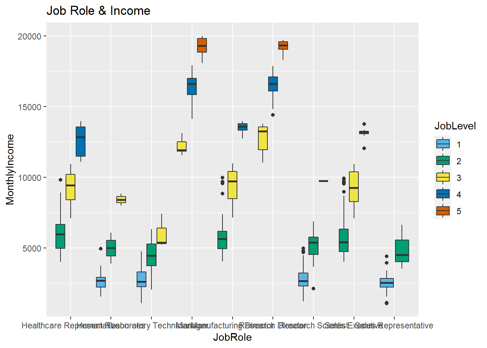
df %>%
ggplot(aes(x = JobLevel, y = MonthlyIncome, fill = JobLevel)) +
geom_boxplot() +
ggtitle("Job Level & Income") +
scale_fill_manual(values=cbPalette)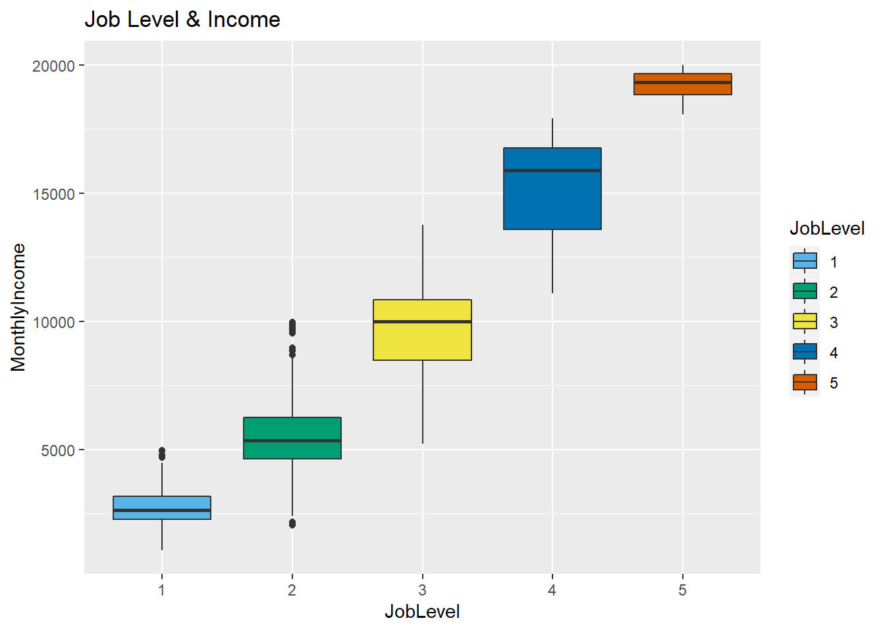
Monthly income seems to align with job levels. The highest salaries are at job level of 4 & 5, so is probably not an anomaly.
#remove unnecessary values, employee count, over18, and standard hours
df <- df %>% dplyr::select(-c(EmployeeCount, Over18, StandardHours, EmployeeNumber))We are now down to 32 variables instead of original 35 by removing ones that contribute no value.
#check if we need to limit total working years
boxplot(df$TotalWorkingYears)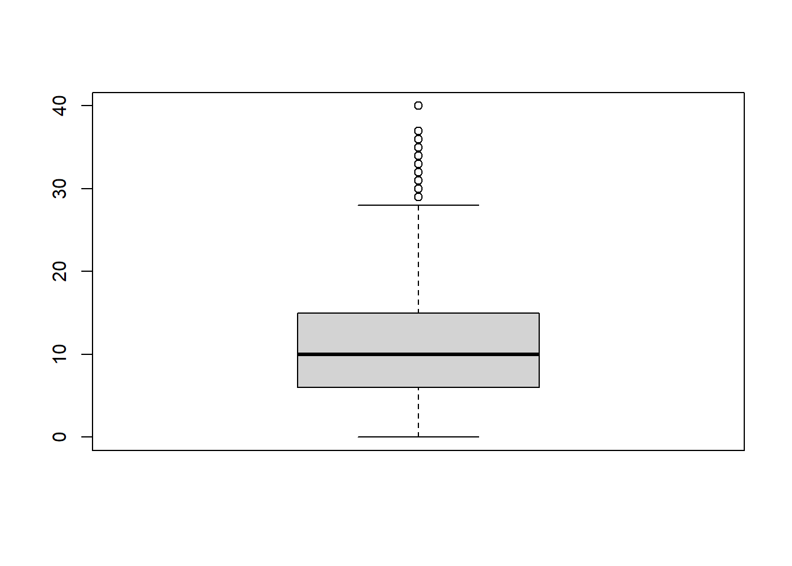 Exclude all ‘outliers’ as we aren’t really interested in attrition rate for people that have been working > 30 years, since they are closer to retirement age generally than those working for< 30 years.
df <- df %>% filter(TotalWorkingYears <= 30)We are now down to 845 observations, but it removed some potentially influential outliers. It now limits our scope to employees working 30 or less years.
Let’s check what that now has done to our other years variables.
YearsSinceLastPromotion also looks like it might have some outliers, let’s check the boxplot.
boxplot(df$YearsSinceLastPromotion)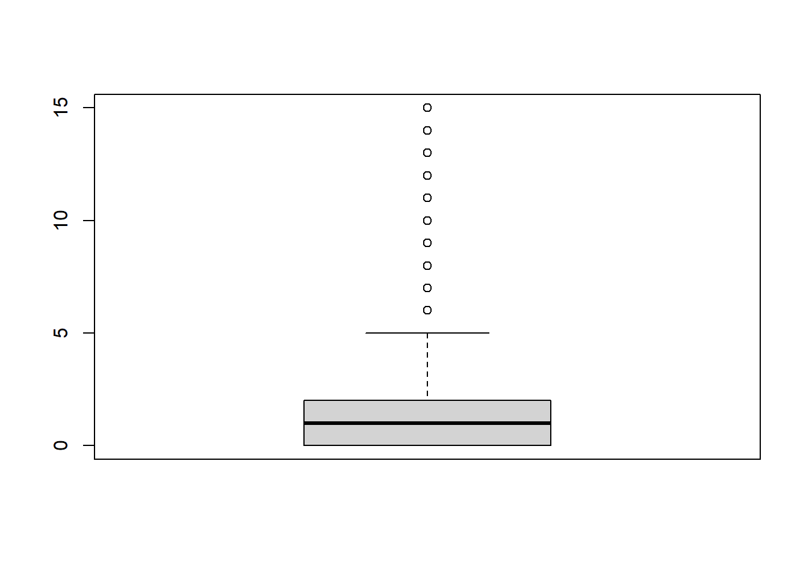
This seems to be an important variable in determining attrition, so let’s leave it in, but we do have quite a few outliers.
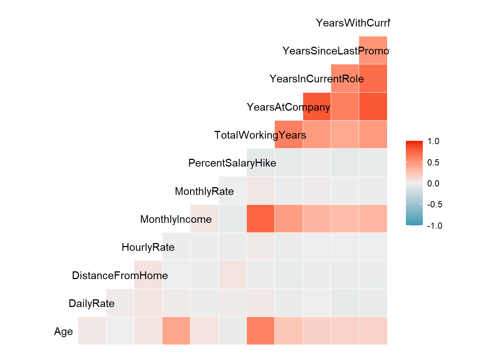
#plot the highest correlation variables to investigate further
df %>% ggplot(aes(x= Age, y = YearsAtCompany, colour = Attrition)) +
geom_point()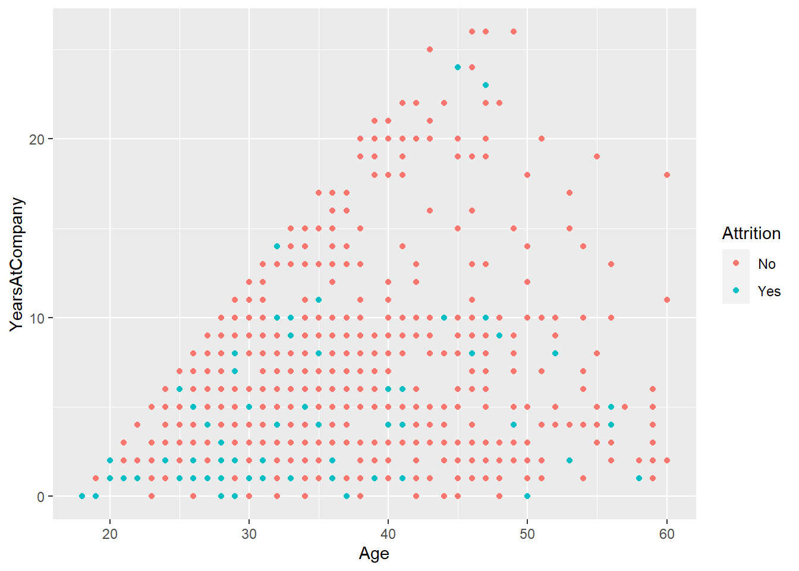
df %>% ggplot(aes(x= Age, y = YearsAtCompany, colour = MonthlyIncome)) +
geom_point()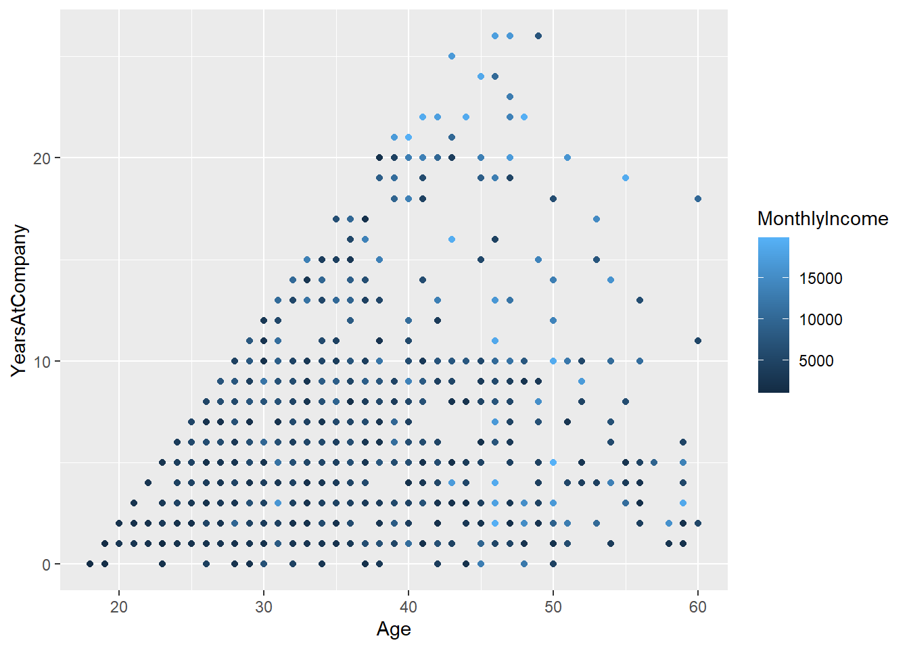
df %>% ggplot(aes(x= MonthlyIncome, y = TotalWorkingYears, colour = Attrition)) +
geom_point()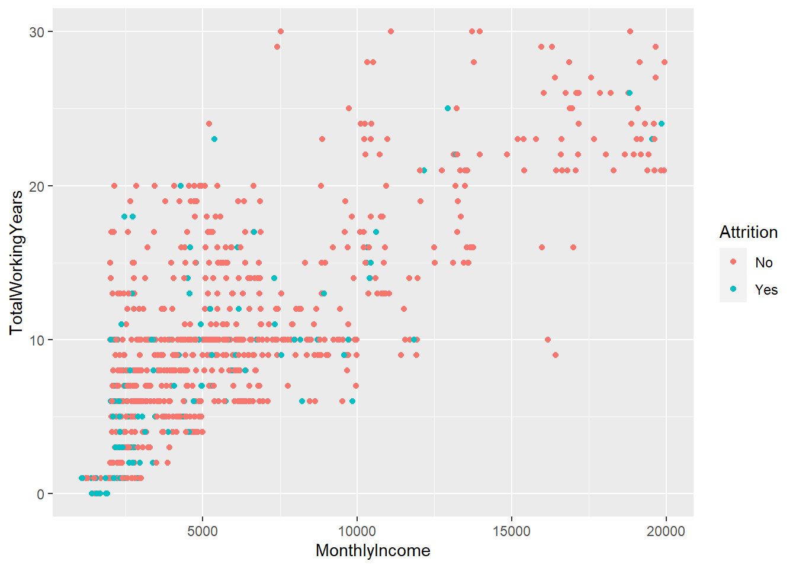
df %>% ggplot(aes(x= MonthlyIncome, y = TotalWorkingYears, colour = MonthlyIncome)) +
geom_point()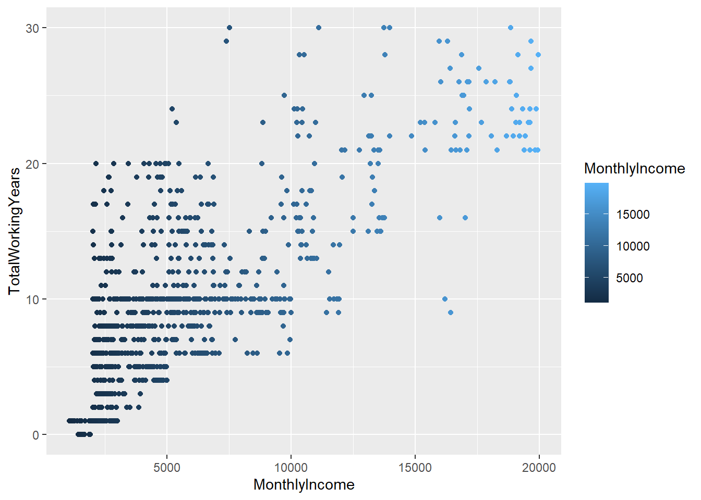
df %>% ggplot(aes(x= TotalWorkingYears, y = YearsAtCompany, colour = Attrition)) +
geom_point()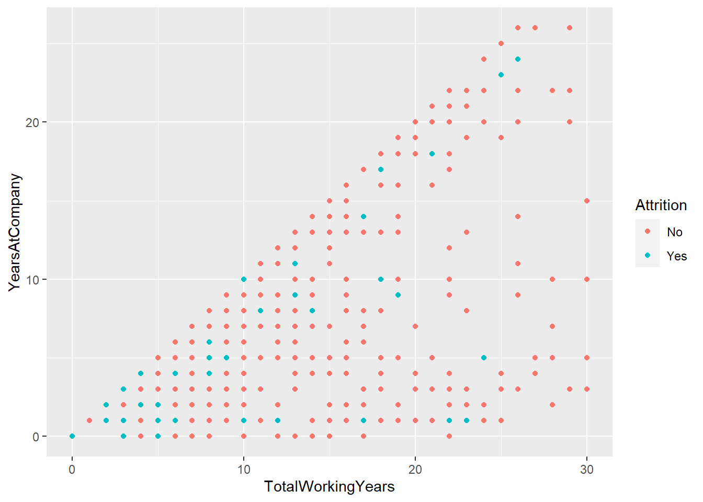
df %>% ggplot(aes(x= TotalWorkingYears, y = YearsAtCompany, colour = MonthlyIncome)) +
geom_point()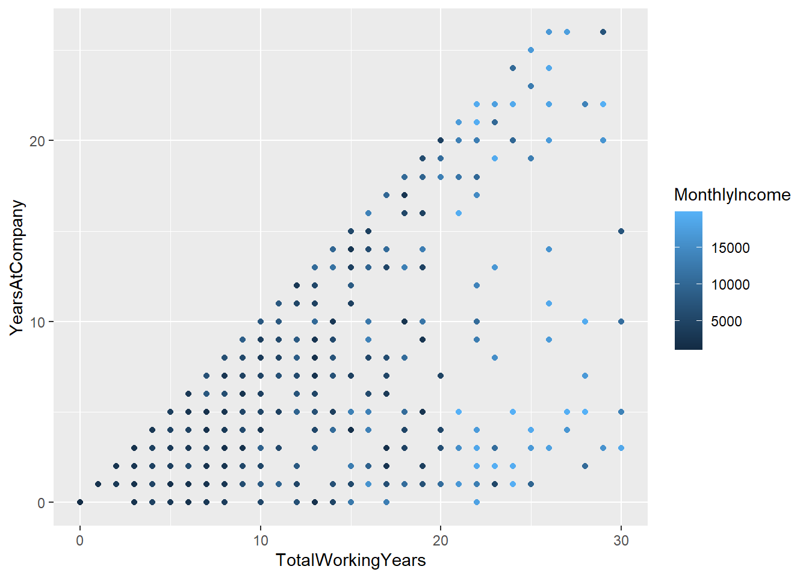
All of the data including years in the role, total working years, etc show high correlations as to be expected. However, these also seem to be valuable predictors in determining attrition and monthly income so do not want to remove them at this time.
#check distance from home
df %>%
ggplot(aes(x = Attrition, y = DistanceFromHome, fill = Attrition)) +
geom_boxplot() +
ggtitle("Attrition and Distance From Home") +
scale_fill_manual(values=cbPalette)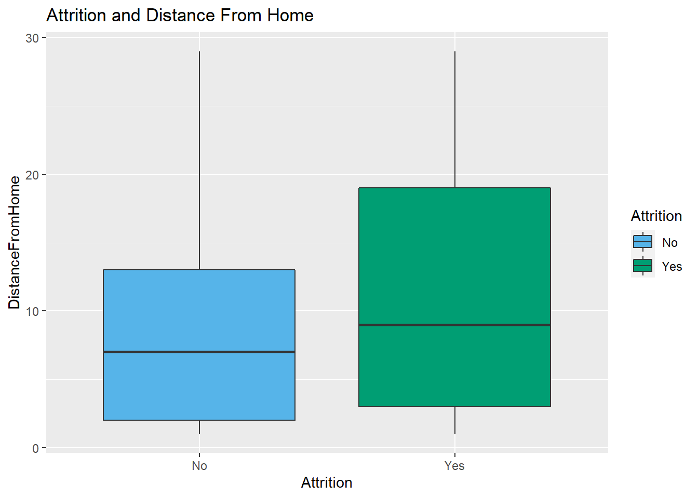
It looks like there could be higher attrition with farther home distances, but may not be significantly different. Perform t-test to check.
t.test(DistanceFromHome ~ Attrition, data = df, mu = 0, conf.level = 0.95)##
## Welch Two Sample t-test
##
## data: DistanceFromHome by Attrition
## t = -2.4537, df = 181.79, p-value = 0.01508
## alternative hypothesis: true difference in means is not equal to 0
## 95 percent confidence interval:
## -3.5602816 -0.3864997
## sample estimates:
## mean in group No mean in group Yes
## 8.990113 10.963504With a p-value of 0.015, we do reject the null hypothesis that the true difference in means is equal to 0 for both groups. The mean for the group that is “yes” for attrition is 10.96 miles, whereas the mean for the group that is “no” is 8.99 miles. This does not seem to be a practically significant difference.
#look at attrition by job level and job role
df %>%
group_by(JobLevel) %>%
count(Attrition) %>%
mutate(prop = n/sum(n)) %>%
ggplot(aes(x = JobLevel, y = prop)) +
geom_col(aes(fill = Attrition), position = "dodge") +
geom_text(aes(label = scales::percent(prop),
y = prop,
group = Attrition),
position = position_dodge(width = 0.9),
vjust = 1.5) +
ggtitle("Attrition Rates by Job Level") +
ylab("Proportion") +
scale_fill_manual(values=cbPalette)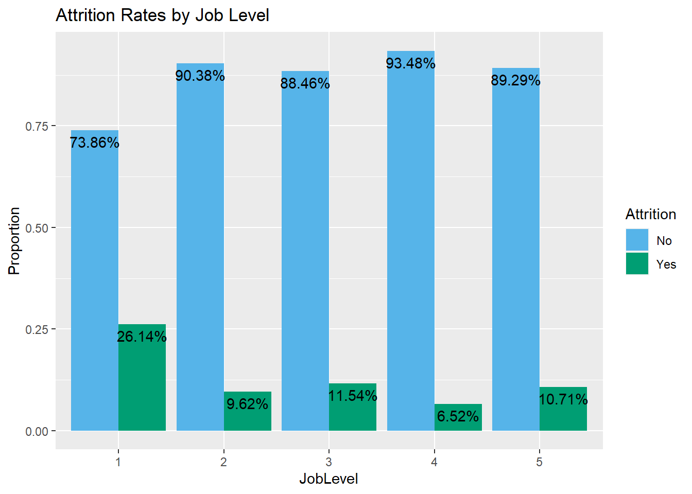
ggsave("joblevel.png")
df %>%
group_by(JobRole) %>%
count(Attrition) %>%
mutate(prop = n/sum(n)) %>%
ggplot(aes(x = JobRole, y = prop)) +
geom_col(aes(fill = Attrition), position = "dodge") +
geom_text(aes(label = scales::percent(prop),
y = prop,
group = Attrition),
position = position_dodge(width = 0.9),
vjust = 1.5) +
coord_flip() +
ggtitle("Attrition Rates by Job Role") +
ylab("Proportion") +
scale_fill_manual(values=cbPalette)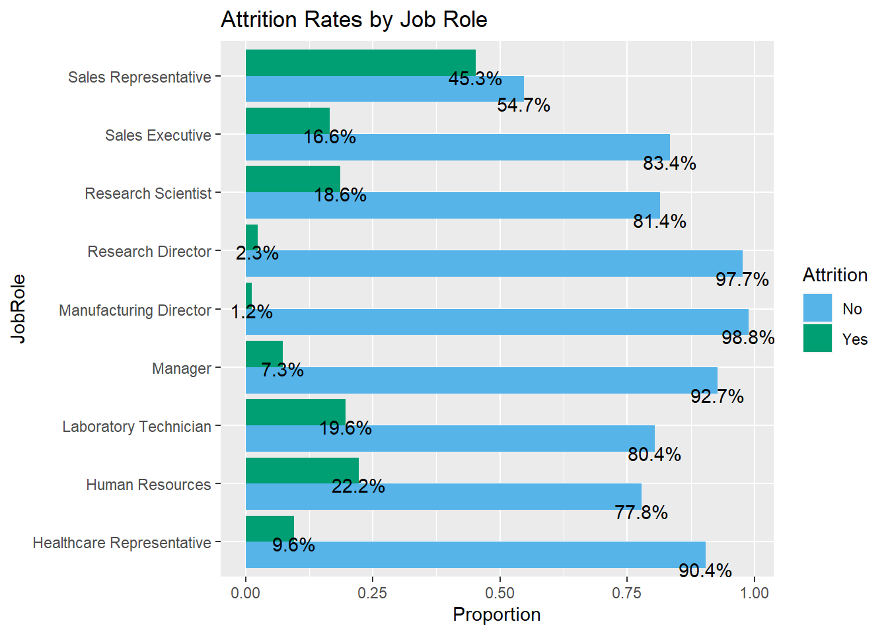
ggsave("jobrole.png")As expected, the earlier you are in your career, the higher the attrition rate. It is interesting to note that job level 4 has the lowest attrition rate of all the levels at only 6.52%.
Sales representatives have by far the highest attrition rate at almost half, 45.3%. Research Directors and Manufacturing Directors are lowest at 2.3% and 1.2% respectively.
#Check attrition and salary by education level
df %>%
group_by(Education) %>%
count(Attrition) %>%
mutate(prop = n/sum(n)) %>%
ggplot(aes(x = Education, y = prop)) +
geom_col(aes(fill = Attrition), position = "dodge") +
geom_text(aes(label = scales::percent(prop),
y = prop,
group = Attrition),
position = position_dodge(width = 0.9),
vjust = 1.5) +
ggtitle("Attrition Rates by Education") +
ylab("Proportion") +
scale_fill_manual(values=cbPalette)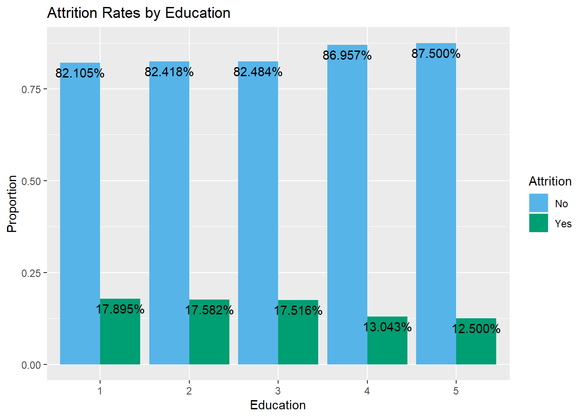
df %>% ggplot(aes(x = Education, y = MonthlyIncome, fill = Education)) +
geom_boxplot() +
ggtitle("Monthly Income Based on Education Level") +
scale_fill_manual(values=cbPalette)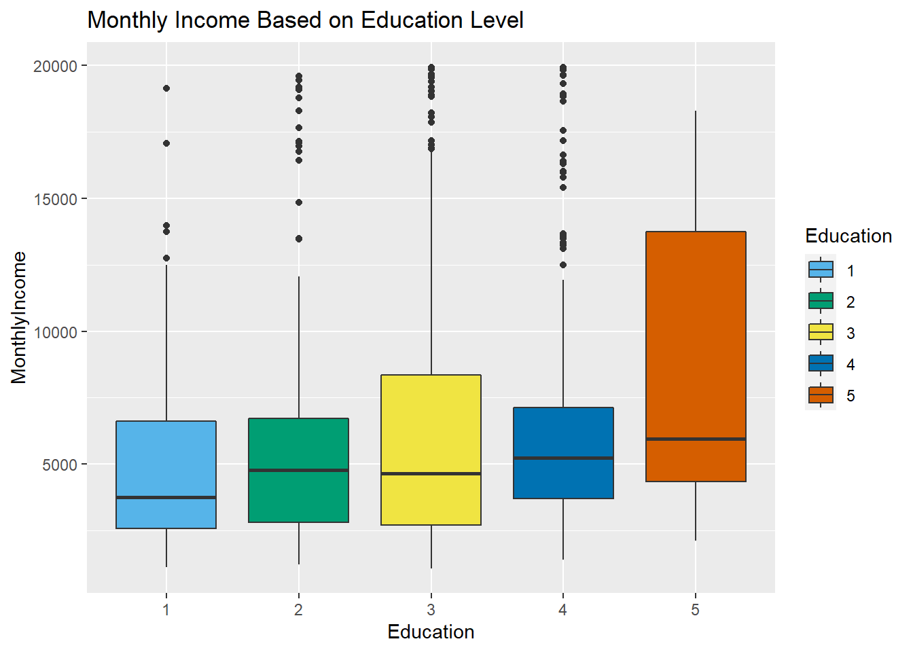
Attrition seems to be independent of education level, although it decreases slightly with post-graduate levels. Monthly Income also does not change significantly until you reach the post-graduate level as well.
#plot hourly rate vs monthly income - corrplot didn't show correlation which is odd
df %>%
ggplot(aes(x = HourlyRate, y = MonthlyIncome, color = OverTime)) +
geom_point() +
ggtitle("Monthly Income vs Hourly Rate")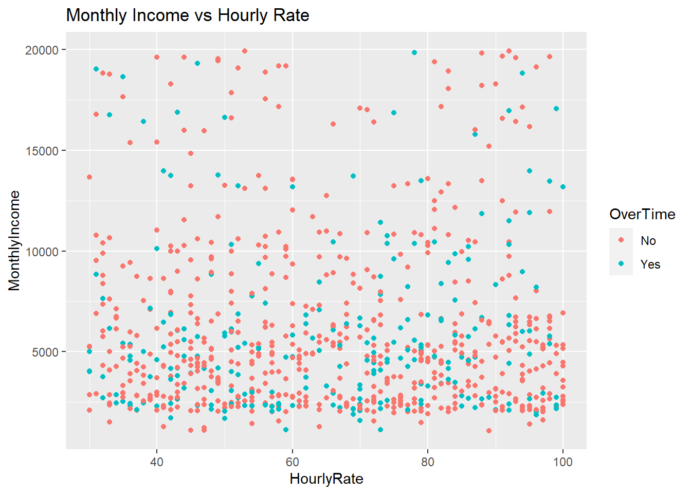 This relationship is very odd. You would expect the monthly income to increase the same as hourly rate, given that our data reported standard hours as 80 for each data row. Suspect this if salaried or not. Keep it in for now, may turn out to be useful.
#check monthly rate and monthly income
df %>%
ggplot(aes(x = MonthlyRate, y = MonthlyIncome, color = OverTime)) +
geom_point() +
ggtitle("Monthly Income vs Monthly Rate")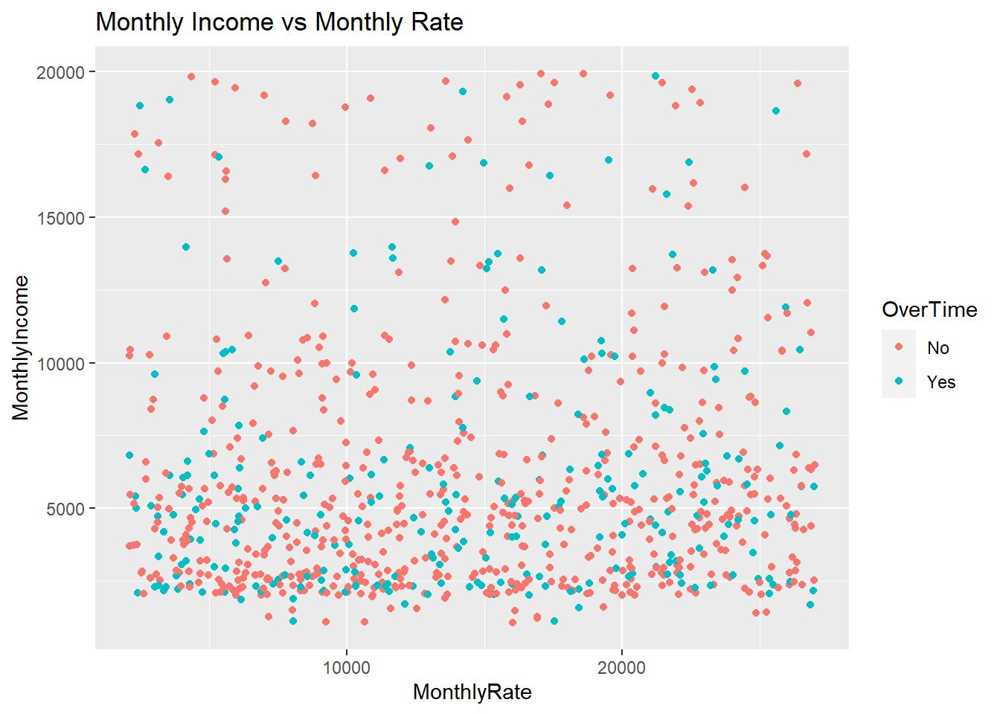
#check attrition based on monthly income
df %>%
ggplot(aes(x = Attrition, y = MonthlyIncome, fill = Attrition)) +
geom_boxplot() +
ggtitle("Attrition and Monthly Income") +
scale_fill_manual(values=cbPalette) 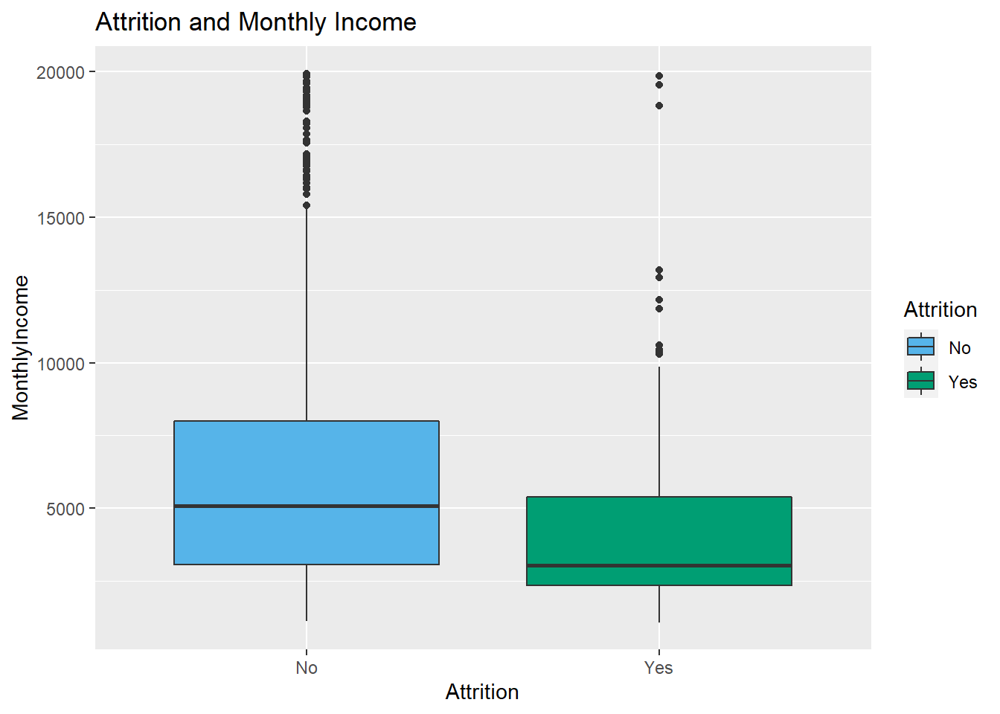
ggsave("income.png")Lower monthly incomes are associated with more attrition.
#check the outliers in the "yes" group
df %>% filter(Attrition == "Yes") %>% top_n(3, MonthlyIncome)## # A tibble: 3 x 31
## Age Attrition BusinessTravel DailyRate Department DistanceFromHome Education EducationField EnvironmentSati~
## <dbl> <fct> <fct> <dbl> <fct> <dbl> <ord> <fct> <ord>
## 1 55 Yes Travel_Rarely 725 Research ~ 2 3 Medical 4
## 2 41 Yes Travel_Rarely 1360 Research ~ 12 3 Technical Deg~ 2
## 3 45 Yes Travel_Rarely 1449 Sales 2 3 Marketing 1
## # ... with 22 more variables: Gender <fct>, HourlyRate <dbl>, JobInvolvement <fct>, JobLevel <ord>, JobRole <fct>,
## # JobSatisfaction <ord>, MaritalStatus <fct>, MonthlyIncome <dbl>, MonthlyRate <dbl>, NumCompaniesWorked <fct>,
## # OverTime <fct>, PercentSalaryHike <dbl>, PerformanceRating <ord>, RelationshipSatisfaction <ord>,
## # StockOptionLevel <fct>, TotalWorkingYears <dbl>, TrainingTimesLastYear <fct>, WorkLifeBalance <ord>,
## # YearsAtCompany <dbl>, YearsInCurrentRole <dbl>, YearsSinceLastPromotion <dbl>, YearsWithCurrManager <dbl>#Run t-test to check if statistically significant
t.test(MonthlyIncome ~ Attrition, data = df, mu = 0, conf.level = 0.95)##
## Welch Two Sample t-test
##
## data: MonthlyIncome by Attrition
## t = 5.2876, df = 225.04, p-value = 2.929e-07
## alternative hypothesis: true difference in means is not equal to 0
## 95 percent confidence interval:
## 1141.939 2498.720
## sample estimates:
## mean in group No mean in group Yes
## 6396.278 4575.949With a p-value of < 0.001, we reject the null hypothesis that the true difference in means of monthly income are equal for those that quit and those that do not. Therefore we can conclude monthly income has some influence on attrition rates.
#look at attrition by years since last promotion
df %>%
group_by(YearsSinceLastPromotion) %>%
count(Attrition) %>%
mutate(prop = n/sum(n)) %>%
ggplot(aes(x = YearsSinceLastPromotion, y = prop)) +
geom_col(aes(fill = Attrition), position = "dodge") +
geom_text(aes(label = scales::percent(prop),
y = prop,
group = Attrition),
position = position_dodge(width = 0.9),
vjust = 1.5) +
ggtitle("Attrition Rates by Years Since Last Promotion") +
ylab("Proportion") +
scale_fill_manual(values=cbPalette)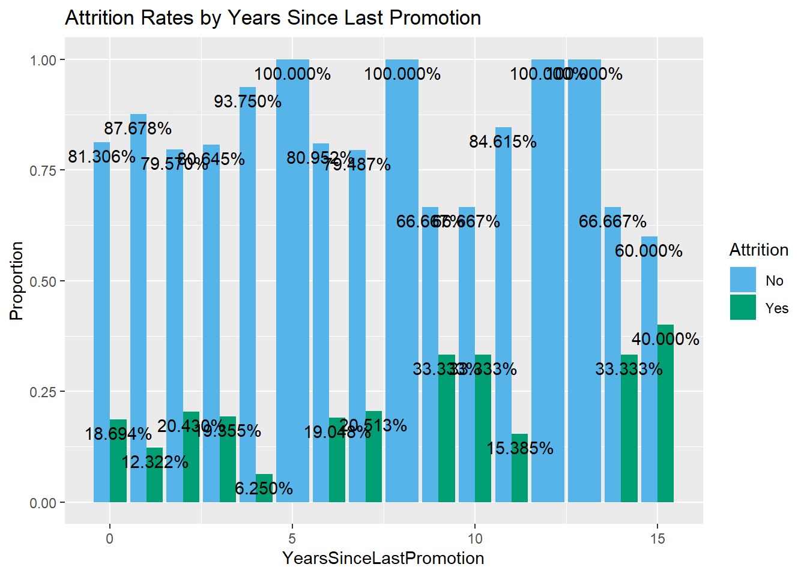
There does not seem to be a single conclusion that can be made for attrition based on years since last promotion.
#look at attrition by work/life balance
df %>%
group_by(WorkLifeBalance) %>%
count(Attrition) %>%
mutate(prop = n/sum(n)) %>%
ggplot(aes(x = WorkLifeBalance, y = prop)) +
geom_col(aes(fill = Attrition), position = "dodge") +
geom_text(aes(label = scales::percent(prop),
y = prop,
group = Attrition),
position = position_dodge(width = 0.9),
vjust = 1.5) +
ggtitle("Attrition Rates by Work/Life Balance") +
ylab("Proportion") +
scale_fill_manual(values=cbPalette)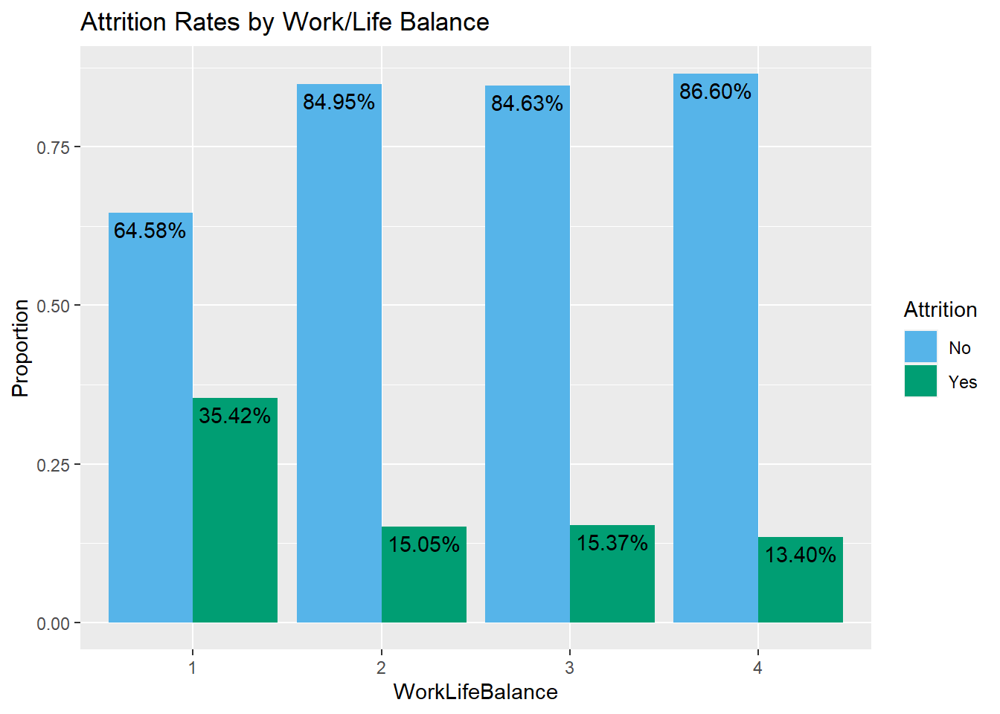
ggsave("overall.png")
#job roles for lowest work/life balance ratings + attrition = "yes"
pie <- df %>%
filter(WorkLifeBalance == "1" & Attrition == "Yes")
pie %>% group_by(JobRole) %>%
count(JobRole) %>%
ggplot(aes(x = JobRole, y = n, fill = JobRole)) +
geom_bar(stat = "identity") +
labs(title="Lowest Work-Life Balance Jobs",
subtitle = "Among Employees That Leave") +
ylab("Count") +
scale_fill_manual(values=cbPalette) +
theme(legend.position = "none") +
coord_flip()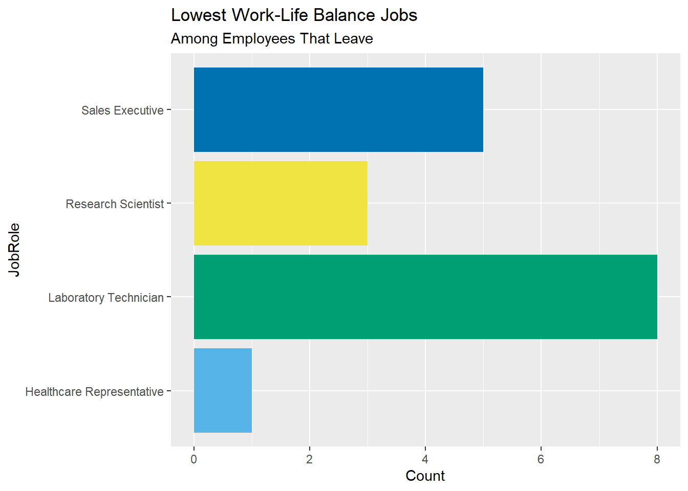
ggsave("worklife.png")
#how many of each job role overall
df %>%
group_by(JobRole) %>%
count(JobRole)## # A tibble: 9 x 2
## # Groups: JobRole [9]
## JobRole n
## <fct> <int>
## 1 Healthcare Representative 73
## 2 Human Resources 27
## 3 Laboratory Technician 153
## 4 Manager 41
## 5 Manufacturing Director 84
## 6 Research Director 43
## 7 Research Scientist 172
## 8 Sales Executive 199
## 9 Sales Representative 53Assuming that 1 is bad work/life balance, it would make sense to see higher attrition rates for this variable.
Let’s check for business travel.
df %>%
group_by(BusinessTravel) %>%
count(Attrition) %>%
mutate(prop = n/sum(n)) %>%
ggplot(aes(x = BusinessTravel, y = prop)) +
geom_col(aes(fill = Attrition), position = "dodge") +
geom_text(aes(label = scales::percent(prop),
y = prop,
group = Attrition),
position = position_dodge(width = 0.9),
vjust = 1.5) +
ggtitle("Attrition Rates by Amount of Business Travel") +
ylab("Proportion")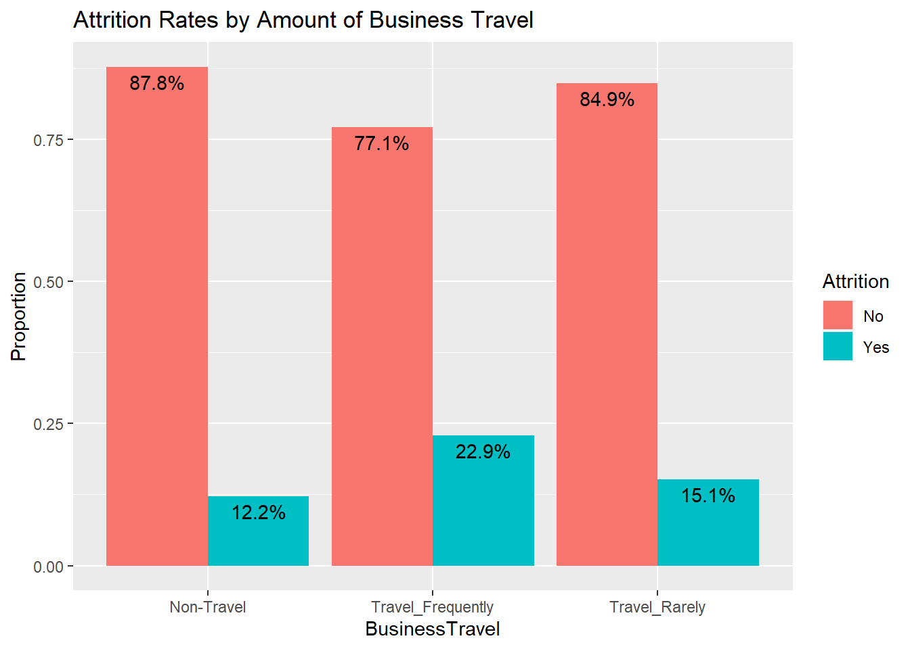 No strong conclusions to make about business travel.
#environment satisfaction
df %>%
group_by(EnvironmentSatisfaction) %>%
count(Attrition) %>%
mutate(prop = n/sum(n)) %>%
ggplot(aes(x = EnvironmentSatisfaction, y = prop)) +
geom_col(aes(fill = Attrition), position = "dodge") +
geom_text(aes(label = scales::percent(prop),
y = prop,
group = Attrition),
position = position_dodge(width = 0.9),
vjust = 1.5) +
ggtitle("Attrition Rates by Environment Satisfaction") +
ylab("Proportion") +
scale_fill_manual(values=cbPalette)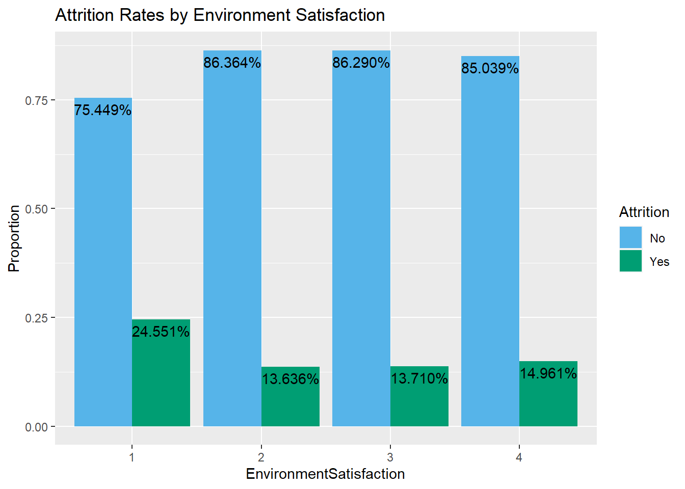
ggsave("env.png")## Saving 7 x 5 in imagepie2 <- df %>%
filter(EnvironmentSatisfaction == "1" & Attrition == "Yes")
pie2 %>% group_by(JobRole) %>%
count(JobRole) %>%
ggplot(aes(x = JobRole, y = n, fill = JobRole)) +
geom_bar(stat = "identity") +
labs(title="Lowest Environment Satisfaction",
subtitle = "Among Employees that Leave") +
ylab("Count") +
scale_fill_manual(values=cbPalette) +
theme(legend.position = "none") +
coord_flip()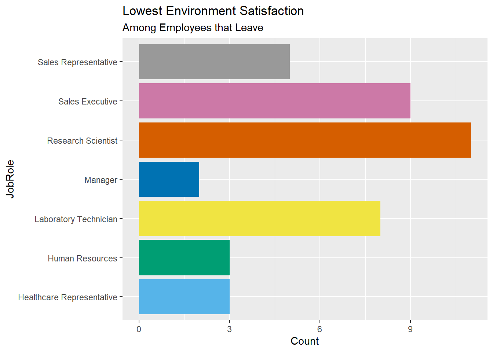
ggsave("environment.png")## Saving 7 x 5 in imageBefore going into our model building, the top variables that seem to indicate attrition are: - Work/Life Balance - Job Level - Monthly Income - Job Role - Environment Satisfaction
#create standardized data set to run specifically for knn
df.std <- df %>%
mutate_if(is.numeric, scale)#data set is pretty small at only 870 obs, complete 70/30 splits and get reasonable amount of YES in each set
# set random seed
set.seed(1)
# create the training partition that is 70% of total obs
inTraining <- createDataPartition(df$Attrition, p=0.7, list=FALSE)
# create training/testing dataset
trainSet <- df[inTraining,]
testSet <- df[-inTraining,]
# verify number of obs
nrow(trainSet)## [1] 592nrow(testSet) ## [1] 253head(trainSet)## # A tibble: 6 x 31
## Age Attrition BusinessTravel DailyRate Department DistanceFromHome Education EducationField EnvironmentSati~
## <dbl> <fct> <fct> <dbl> <fct> <dbl> <ord> <fct> <ord>
## 1 32 No Travel_Rarely 117 Sales 13 4 Life Sciences 2
## 2 40 No Travel_Rarely 1308 Research ~ 14 3 Medical 3
## 3 35 No Travel_Freque~ 200 Research ~ 18 2 Life Sciences 3
## 4 32 No Travel_Rarely 801 Sales 1 4 Marketing 3
## 5 24 No Travel_Freque~ 567 Research ~ 2 1 Technical Deg~ 1
## 6 27 No Travel_Freque~ 294 Research ~ 10 2 Life Sciences 4
## # ... with 22 more variables: Gender <fct>, HourlyRate <dbl>, JobInvolvement <fct>, JobLevel <ord>, JobRole <fct>,
## # JobSatisfaction <ord>, MaritalStatus <fct>, MonthlyIncome <dbl>, MonthlyRate <dbl>, NumCompaniesWorked <fct>,
## # OverTime <fct>, PercentSalaryHike <dbl>, PerformanceRating <ord>, RelationshipSatisfaction <ord>,
## # StockOptionLevel <fct>, TotalWorkingYears <dbl>, TrainingTimesLastYear <fct>, WorkLifeBalance <ord>,
## # YearsAtCompany <dbl>, YearsInCurrentRole <dbl>, YearsSinceLastPromotion <dbl>, YearsWithCurrManager <dbl>head(testSet)## # A tibble: 6 x 31
## Age Attrition BusinessTravel DailyRate Department DistanceFromHome Education EducationField EnvironmentSati~
## <dbl> <fct> <fct> <dbl> <fct> <dbl> <ord> <fct> <ord>
## 1 34 No Travel_Freque~ 653 Research ~ 10 4 Technical Deg~ 4
## 2 28 No Non-Travel 280 Human Res~ 1 2 Life Sciences 3
## 3 35 No Travel_Rarely 950 Research ~ 7 3 Other 3
## 4 30 No Travel_Rarely 202 Sales 2 1 Technical Deg~ 3
## 5 32 No Travel_Rarely 498 Research ~ 3 4 Medical 3
## 6 43 No Travel_Freque~ 1001 Research ~ 9 5 Medical 4
## # ... with 22 more variables: Gender <fct>, HourlyRate <dbl>, JobInvolvement <fct>, JobLevel <ord>, JobRole <fct>,
## # JobSatisfaction <ord>, MaritalStatus <fct>, MonthlyIncome <dbl>, MonthlyRate <dbl>, NumCompaniesWorked <fct>,
## # OverTime <fct>, PercentSalaryHike <dbl>, PerformanceRating <ord>, RelationshipSatisfaction <ord>,
## # StockOptionLevel <fct>, TotalWorkingYears <dbl>, TrainingTimesLastYear <fct>, WorkLifeBalance <ord>,
## # YearsAtCompany <dbl>, YearsInCurrentRole <dbl>, YearsSinceLastPromotion <dbl>, YearsWithCurrManager <dbl>#check how many "Yes" attrition in train & test
summary(trainSet$Attrition)## No Yes
## 496 96summary(testSet$Attrition)## No Yes
## 212 41# set random seed
set.seed(1)
# create the training partition that is 70% of total obs
inTraining <- createDataPartition(df.std$Attrition, p=0.7, list=FALSE)
# create training/testing dataset
trainSet.knn <- df.std[inTraining,]
testSet.knn <- df.std[-inTraining,]
# verify number of obs
nrow(trainSet.knn)## [1] 592nrow(testSet.knn) ## [1] 253#check how many "Yes" attrition in train & test
summary(trainSet.knn$Attrition)## No Yes
## 496 96summary(testSet.knn$Attrition)## No Yes
## 212 41#loop to find optimal k for sensitivity
accs <- data.frame(accuracy = numeric(20), k = numeric(20))
sens <- data.frame(sensitivity = numeric(20), k = numeric(20))
#make numeric only train and test as knn can only run on continuous variables
trainNum <- trainSet.knn[ , sapply(trainSet.knn, is.numeric)]
#add back Attrition
trainNum <- cbind(trainNum,trainSet.knn$Attrition)
names(trainNum)[names(trainNum)=="trainSet.knn$Attrition"] <- "Attrition"
testNum <- testSet.knn[ , sapply(testSet.knn, is.numeric)]
#add back Attrition
testNum <- cbind(testNum,testSet.knn$Attrition)
names(testNum)[names(testNum)=="testSet.knn$Attrition"] <- "Attrition"
for(i in 1:20)
{
classifications <- knn(trainNum[,1:12],testNum[,1:12],trainNum$Attrition,prob = TRUE, k = i)
table(testNum$Attrition,classifications)
CM <- confusionMatrix(table(testNum$Attrition,classifications), positive = "Yes")
accs$accuracy[i] = CM$overall[1]
accs$k[i] = i
sens$sensitivity[i] = CM$byClass[1]
sens$k[i] = i
}
plot(accs$k,accs$accuracy, type = "l", xlab = "k")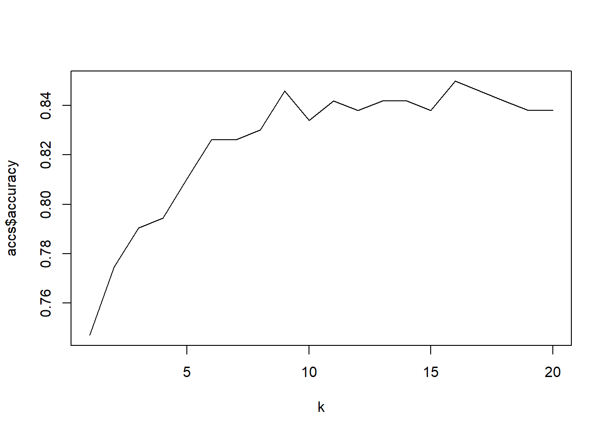
plot(sens$k,sens$sensitivity, type = "l", xlab = "k")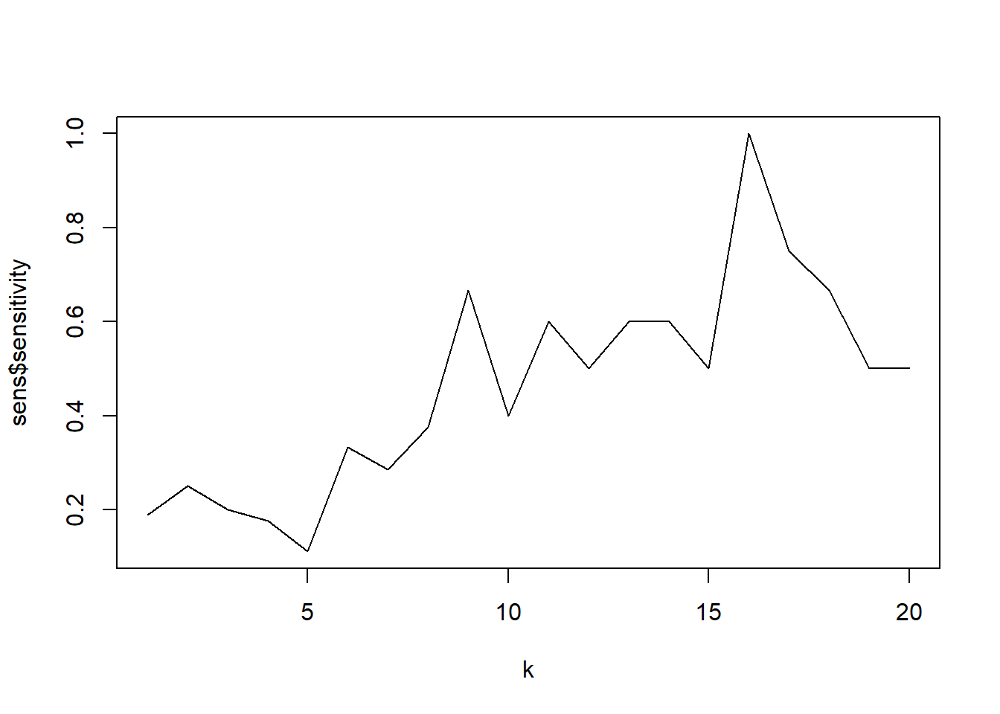
accs## accuracy k
## 1 0.7470356 1
## 2 0.7747036 2
## 3 0.7905138 3
## 4 0.7944664 4
## 5 0.8102767 5
## 6 0.8260870 6
## 7 0.8260870 7
## 8 0.8300395 8
## 9 0.8458498 9
## 10 0.8339921 10
## 11 0.8418972 11
## 12 0.8379447 12
## 13 0.8418972 13
## 14 0.8418972 14
## 15 0.8379447 15
## 16 0.8498024 16
## 17 0.8458498 17
## 18 0.8418972 18
## 19 0.8379447 19
## 20 0.8379447 20sens## sensitivity k
## 1 0.1891892 1
## 2 0.2500000 2
## 3 0.2000000 3
## 4 0.1764706 4
## 5 0.1111111 5
## 6 0.3333333 6
## 7 0.2857143 7
## 8 0.3750000 8
## 9 0.6666667 9
## 10 0.4000000 10
## 11 0.6000000 11
## 12 0.5000000 12
## 13 0.6000000 13
## 14 0.6000000 14
## 15 0.5000000 15
## 16 1.0000000 16
## 17 0.7500000 17
## 18 0.6666667 18
## 19 0.5000000 19
## 20 0.5000000 20which.max(sens$sensitivity)## [1] 16#k=17 had good accuracy and sensitivity, run model with k=17 and check sensitivity and specificity on test set
classifications <- knn(trainNum[,1:12],testNum[,1:12],trainNum$Attrition,prob = TRUE, k = 17)
table(testNum$Attrition,classifications)## classifications
## No Yes
## No 211 1
## Yes 38 3CM <- confusionMatrix(table(testNum$Attrition,classifications), positive = "Yes")
CM## Confusion Matrix and Statistics
##
## classifications
## No Yes
## No 211 1
## Yes 38 3
##
## Accuracy : 0.8458
## 95% CI : (0.7954, 0.888)
## No Information Rate : 0.9842
## P-Value [Acc > NIR] : 1
##
## Kappa : 0.1076
##
## Mcnemar's Test P-Value : 8.185e-09
##
## Sensitivity : 0.75000
## Specificity : 0.84739
## Pos Pred Value : 0.07317
## Neg Pred Value : 0.99528
## Prevalence : 0.01581
## Detection Rate : 0.01186
## Detection Prevalence : 0.16206
## Balanced Accuracy : 0.79869
##
## 'Positive' Class : Yes
## We have overall accuracy at 84%, sensitivity at 75%, and specificity at 85%. Overall that’s not too bad, but it only predicted “Yes” 3 times out of 41 actual yeses.
Let’s run with only the top suspected numeric variables.
classifications_top <- kNN(Attrition ~ MonthlyIncome + TotalWorkingYears + YearsAtCompany,trainNum,testNum,prob = TRUE, k = 5)
#table(testNum$Attrition,classifications_top)
CM_top <- confusionMatrix(table(testNum$Attrition,classifications_top), positive = "Yes")
CM_top## Confusion Matrix and Statistics
##
## classifications_top
## No Yes
## No 204 8
## Yes 40 1
##
## Accuracy : 0.8103
## 95% CI : (0.7564, 0.8567)
## No Information Rate : 0.9644
## P-Value [Acc > NIR] : 1
##
## Kappa : -0.0195
##
## Mcnemar's Test P-Value : 7.66e-06
##
## Sensitivity : 0.111111
## Specificity : 0.836066
## Pos Pred Value : 0.024390
## Neg Pred Value : 0.962264
## Prevalence : 0.035573
## Detection Rate : 0.003953
## Detection Prevalence : 0.162055
## Balanced Accuracy : 0.473588
##
## 'Positive' Class : Yes
## ## KNN with 10x cross validation repeated 5x
fitControl <- trainControl(method="repeatedcv",
repeats = 5,
number=10,
classProbs=T,
summaryFunction=twoClassSummary)
set.seed(1234)
## evaluate on train set based on area under the ROC (AUC)
KNN_caret <- train(Attrition ~.,
data=trainNum,
method="knn",
trControl=fitControl,
tuneGrid=expand.grid(.k=c(1,3,5,7,9,11,15,17)),
metric = "ROC")
KNN_caret## k-Nearest Neighbors
##
## 592 samples
## 12 predictor
## 2 classes: 'No', 'Yes'
##
## No pre-processing
## Resampling: Cross-Validated (10 fold, repeated 5 times)
## Summary of sample sizes: 532, 533, 533, 533, 533, 533, ...
## Resampling results across tuning parameters:
##
## k ROC Sens Spec
## 1 0.5120512 0.8545469 0.16955556
## 3 0.5658356 0.9400163 0.12377778
## 5 0.5880110 0.9548816 0.10800000
## 7 0.5969038 0.9673878 0.07666667
## 9 0.6071814 0.9738531 0.05933333
## 11 0.6134052 0.9794857 0.04955556
## 15 0.6298600 0.9923510 0.02466667
## 17 0.6345838 0.9927510 0.01600000
##
## ROC was used to select the optimal model using the largest value.
## The final value used for the model was k = 17.Because we suspect the top contributing factors to be factors and not numeric variables, KNN is probably not best model (but it is odd it had the exact same performance with just a few numeric variables). Let’s move on to Naive Bayes which will use both numeric and factors.
#run model on all variables
NB1 = naiveBayes(Attrition~ .,data = trainSet)
summary(NB1)## Length Class Mode
## apriori 2 table numeric
## tables 30 -none- list
## levels 2 -none- character
## isnumeric 30 -none- logical
## call 4 -none- call#predict on the test set
pred1 <- predict(NB1,testSet, type = "raw")
#confusion matrix
confusionMatrix(table(predict(NB1,testSet),testSet$Attrition), positive = "Yes")## Confusion Matrix and Statistics
##
##
## No Yes
## No 183 11
## Yes 29 30
##
## Accuracy : 0.8419
## 95% CI : (0.791, 0.8846)
## No Information Rate : 0.8379
## P-Value [Acc > NIR] : 0.47365
##
## Kappa : 0.5054
##
## Mcnemar's Test P-Value : 0.00719
##
## Sensitivity : 0.7317
## Specificity : 0.8632
## Pos Pred Value : 0.5085
## Neg Pred Value : 0.9433
## Prevalence : 0.1621
## Detection Rate : 0.1186
## Detection Prevalence : 0.2332
## Balanced Accuracy : 0.7975
##
## 'Positive' Class : Yes
## summary(testSet$Attrition)## No Yes
## 212 41summary(trainSet$Attrition)## No Yes
## 496 96Our Naive Bayes classifier performs really good in comparison to best KNN model. Overall accuracy is 84% with specificity at 86% and sensitivity at 73%. Of our total 41 yeses, it predicted 30 accurately.
#check for different cut off for better performance
preds_nb <- as.data.frame(pred1)
preds_nb1 <- prediction(preds_nb[,2],testSet$Attrition)
roc.perf_nb = performance(preds_nb1, measure = "tpr", x.measure = "fpr")
auc.train_nb <- performance(preds_nb1, measure = "auc")
auc.train_nb <- auc.train_nb@y.values
plot(roc.perf_nb, colorize = TRUE)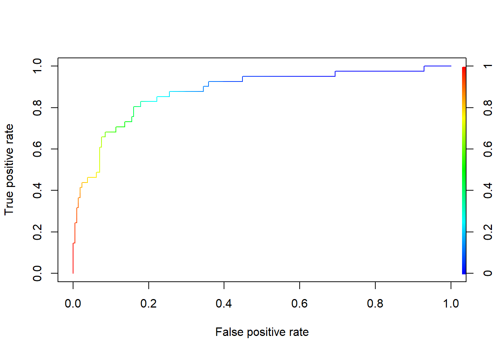
#check metrics when cut-off = 0.4 instead of 0.5
cutoff<-0.4
class.nb<-factor(ifelse(pred1[,2]>cutoff,"Yes","No"))
confusionMatrix(class.nb,testSet$Attrition, positive = "Yes")## Confusion Matrix and Statistics
##
## Reference
## Prediction No Yes
## No 177 8
## Yes 35 33
##
## Accuracy : 0.83
## 95% CI : (0.778, 0.8742)
## No Information Rate : 0.8379
## P-Value [Acc > NIR] : 0.6708
##
## Kappa : 0.5055
##
## Mcnemar's Test P-Value : 7.341e-05
##
## Sensitivity : 0.8049
## Specificity : 0.8349
## Pos Pred Value : 0.4853
## Neg Pred Value : 0.9568
## Prevalence : 0.1621
## Detection Rate : 0.1304
## Detection Prevalence : 0.2688
## Balanced Accuracy : 0.8199
##
## 'Positive' Class : Yes
## Metrics improve slightly with cutoff at 0.4 instead of 0.5, with sens/spec both around 80%. This is our best model so far.
#run model on top variables from EDA
NB2 = naiveBayes(Attrition~ WorkLifeBalance + MonthlyIncome + JobLevel + JobRole + EnvironmentSatisfaction,data = trainSet)
summary(NB2)## Length Class Mode
## apriori 2 table numeric
## tables 5 -none- list
## levels 2 -none- character
## isnumeric 5 -none- logical
## call 4 -none- call#predict on the test set
pred2 <- predict(NB2,testSet, type="raw")
#confusion matrix
confusionMatrix(table(predict(NB2,testSet),testSet$Attrition), positive = "Yes")## Confusion Matrix and Statistics
##
##
## No Yes
## No 197 27
## Yes 15 14
##
## Accuracy : 0.834
## 95% CI : (0.7823, 0.8777)
## No Information Rate : 0.8379
## P-Value [Acc > NIR] : 0.60787
##
## Kappa : 0.3069
##
## Mcnemar's Test P-Value : 0.08963
##
## Sensitivity : 0.34146
## Specificity : 0.92925
## Pos Pred Value : 0.48276
## Neg Pred Value : 0.87946
## Prevalence : 0.16206
## Detection Rate : 0.05534
## Detection Prevalence : 0.11462
## Balanced Accuracy : 0.63535
##
## 'Positive' Class : Yes
## When we subset to what we suspected were the top variables, our sensitivity decreases to 34%.
#check for different cut off for better performance
preds_nb2 <- as.data.frame(pred2)
preds_nb2 <- prediction(preds_nb2[,2],testSet$Attrition)
roc.perf_nb2 = performance(preds_nb2, measure = "tpr", x.measure = "fpr")
auc.train_nb2 <- performance(preds_nb2, measure = "auc")
auc.train_nb2 <- auc.train_nb2@y.values
plot(roc.perf_nb2, colorize = TRUE)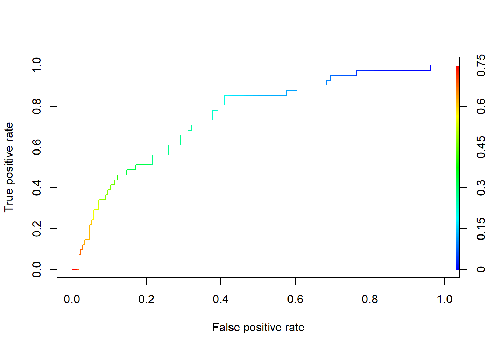
Maybe these are not in fact the top variables, as our sensitivity drops off with just these variables and our AUC goes down.
Let’s try a Random Forest classifier which will also tell us variable importance.
fitRF## Random Forest
##
## 592 samples
## 30 predictor
## 2 classes: 'No', 'Yes'
##
## No pre-processing
## Resampling: Cross-Validated (10 fold, repeated 3 times)
## Summary of sample sizes: 532, 532, 532, 534, 534, 532, ...
## Resampling results across tuning parameters:
##
## mtry ROC Sens Spec
## 10 0.7648054 0.9905850 0.1359259
## 50 0.7470977 0.9771293 0.2374074
## 100 0.7406971 0.9643537 0.2470370
## 250 0.7417333 0.9650204 0.2537037
## 500 0.7416757 0.9656599 0.2470370
##
## ROC was used to select the optimal model using the largest value.
## The final value used for the model was mtry = 10.varImp(fitRF)## rf variable importance
##
## only 20 most important variables shown (out of 75)
##
## Overall
## MonthlyIncome 100.00
## OverTimeYes 95.52
## Age 78.44
## DistanceFromHome 70.57
## DailyRate 67.27
## MonthlyRate 66.43
## TotalWorkingYears 61.94
## YearsAtCompany 61.71
## HourlyRate 60.65
## PercentSalaryHike 58.80
## YearsWithCurrManager 43.28
## YearsInCurrentRole 42.74
## YearsSinceLastPromotion 42.46
## JobSatisfaction.L 34.58
## EnvironmentSatisfaction.L 30.70
## RelationshipSatisfaction.L 29.22
## WorkLifeBalance.L 27.50
## StockOptionLevel1 26.36
## JobSatisfaction.C 25.82
## Education.L 24.92Re-run Naive Bayes with top 10 variables per Random Forest model.
#Naive Bayes
NB3 = naiveBayes(Attrition~ MonthlyIncome + Age + TotalWorkingYears + DailyRate + OverTime + MonthlyRate + HourlyRate + PercentSalaryHike + DistanceFromHome + YearsAtCompany,data = trainSet)
summary(NB3)## Length Class Mode
## apriori 2 table numeric
## tables 10 -none- list
## levels 2 -none- character
## isnumeric 10 -none- logical
## call 4 -none- call#predict on the test set
pred3 <- predict(NB3,testSet,type="raw")
#confusion matrix
confusionMatrix(table(predict(NB3,testSet),testSet$Attrition), positive = "Yes")## Confusion Matrix and Statistics
##
##
## No Yes
## No 202 29
## Yes 10 12
##
## Accuracy : 0.8458
## 95% CI : (0.7954, 0.888)
## No Information Rate : 0.8379
## P-Value [Acc > NIR] : 0.406047
##
## Kappa : 0.3019
##
## Mcnemar's Test P-Value : 0.003948
##
## Sensitivity : 0.29268
## Specificity : 0.95283
## Pos Pred Value : 0.54545
## Neg Pred Value : 0.87446
## Prevalence : 0.16206
## Detection Rate : 0.04743
## Detection Prevalence : 0.08696
## Balanced Accuracy : 0.62276
##
## 'Positive' Class : Yes
## #check for different cut off for better performance
preds_nb3 <- as.data.frame(pred3)
preds_nb3 <- prediction(preds_nb3[,2],testSet$Attrition)
roc.perf_nb3 = performance(preds_nb3, measure = "tpr", x.measure = "fpr")
auc.train_nb3 <- performance(preds_nb3, measure = "auc")
auc.train_nb3 <- auc.train_nb3@y.values
plot(roc.perf_nb3, colorize = TRUE)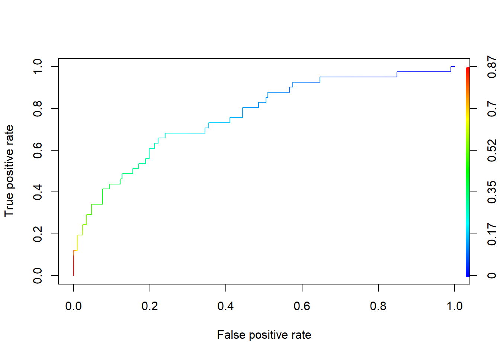
Let’s stick with our best model for classification: Naive Bayes with all variables and cutoff of 0.4.
Let’s move on to creating a linear regression model to predict monthly income.
#first pass model with all variables
linear1 <- lm(MonthlyIncome ~., data = trainSet)
summary(linear1)##
## Call:
## lm(formula = MonthlyIncome ~ ., data = trainSet)
##
## Residuals:
## Min 1Q Median 3Q Max
## -2803.5 -593.3 -49.8 540.2 3926.5
##
## Coefficients:
## Estimate Std. Error t value Pr(>|t|)
## (Intercept) 8.113e+03 8.764e+02 9.257 < 2e-16 ***
## Age -8.125e+00 6.720e+00 -1.209 0.22720
## AttritionYes -3.558e+01 1.433e+02 -0.248 0.80394
## BusinessTravelTravel_Frequently 2.629e+02 1.689e+02 1.557 0.12011
## BusinessTravelTravel_Rarely 3.691e+02 1.427e+02 2.587 0.00995 **
## DailyRate 2.173e-01 1.109e-01 1.958 0.05074 .
## DepartmentResearch & Development -1.201e+02 6.393e+02 -0.188 0.85106
## DepartmentSales -4.198e+02 6.631e+02 -0.633 0.52699
## DistanceFromHome 5.510e-01 5.529e+00 0.100 0.92066
## Education.L -2.008e+02 2.115e+02 -0.950 0.34280
## Education.Q -1.987e+02 1.783e+02 -1.114 0.26564
## Education.C -2.673e+02 1.303e+02 -2.051 0.04075 *
## Education^4 -1.121e+02 9.079e+01 -1.235 0.21746
## EducationFieldLife Sciences -1.693e+01 5.313e+02 -0.032 0.97460
## EducationFieldMarketing -4.990e+01 5.559e+02 -0.090 0.92851
## EducationFieldMedical -9.922e+01 5.318e+02 -0.187 0.85206
## EducationFieldOther -3.098e+02 5.599e+02 -0.553 0.58031
## EducationFieldTechnical Degree -1.674e+02 5.486e+02 -0.305 0.76044
## EnvironmentSatisfaction.L -8.660e+01 9.051e+01 -0.957 0.33914
## EnvironmentSatisfaction.Q 1.463e+01 9.069e+01 0.161 0.87191
## EnvironmentSatisfaction.C -1.016e+02 9.177e+01 -1.107 0.26869
## GenderMale 1.466e+02 9.005e+01 1.628 0.10404
## HourlyRate -9.006e-02 2.229e+00 -0.040 0.96778
## JobInvolvement2 -1.724e+02 2.116e+02 -0.814 0.41580
## JobInvolvement3 -2.359e+02 2.039e+02 -1.157 0.24776
## JobInvolvement4 -1.091e+02 2.415e+02 -0.452 0.65168
## JobLevel.L 9.054e+03 3.513e+02 25.777 < 2e-16 ***
## JobLevel.Q 5.419e+02 1.894e+02 2.862 0.00438 **
## JobLevel.C -6.248e+02 1.662e+02 -3.759 0.00019 ***
## JobLevel^4 3.869e+01 1.406e+02 0.275 0.78333
## JobRoleHuman Resources -1.295e+03 6.811e+02 -1.901 0.05782 .
## JobRoleLaboratory Technician -1.110e+03 2.240e+02 -4.957 9.74e-07 ***
## JobRoleManager 3.447e+03 3.935e+02 8.760 < 2e-16 ***
## JobRoleManufacturing Director 1.152e+02 2.012e+02 0.573 0.56699
## JobRoleResearch Director 3.668e+03 2.809e+02 13.058 < 2e-16 ***
## JobRoleResearch Scientist -1.089e+03 2.233e+02 -4.878 1.43e-06 ***
## JobRoleSales Executive 2.000e+02 4.919e+02 0.407 0.68442
## JobRoleSales Representative -9.696e+02 5.457e+02 -1.777 0.07618 .
## JobSatisfaction.L 6.964e+01 9.175e+01 0.759 0.44820
## JobSatisfaction.Q 5.472e+01 9.199e+01 0.595 0.55222
## JobSatisfaction.C 4.661e+01 9.239e+01 0.504 0.61414
## MaritalStatusMarried 4.187e+01 1.214e+02 0.345 0.73026
## MaritalStatusSingle -3.637e+01 1.891e+02 -0.192 0.84755
## MonthlyRate -4.959e-03 6.318e-03 -0.785 0.43285
## NumCompaniesWorked1 -1.633e+01 1.442e+02 -0.113 0.90989
## NumCompaniesWorked2 1.073e+02 2.117e+02 0.507 0.61248
## NumCompaniesWorked3 3.322e+02 2.010e+02 1.653 0.09897 .
## NumCompaniesWorked4 1.212e+02 1.957e+02 0.619 0.53586
## NumCompaniesWorked5 2.043e+02 2.349e+02 0.869 0.38498
## NumCompaniesWorked6 1.488e+02 2.517e+02 0.591 0.55449
## NumCompaniesWorked7 -4.087e+01 2.365e+02 -0.173 0.86288
## NumCompaniesWorked8 4.200e+02 2.919e+02 1.439 0.15088
## NumCompaniesWorked9 -5.716e+01 2.706e+02 -0.211 0.83278
## OverTimeYes 7.623e+01 1.022e+02 0.746 0.45620
## PercentSalaryHike 3.989e+01 1.872e+01 2.131 0.03356 *
## PerformanceRating.L -3.442e+02 1.390e+02 -2.477 0.01356 *
## RelationshipSatisfaction.L 4.983e+00 9.011e+01 0.055 0.95592
## RelationshipSatisfaction.Q -6.535e+01 9.325e+01 -0.701 0.48370
## RelationshipSatisfaction.C 2.943e+01 9.204e+01 0.320 0.74928
## StockOptionLevel1 6.672e+01 1.474e+02 0.453 0.65102
## StockOptionLevel2 -2.359e+02 1.990e+02 -1.185 0.23655
## StockOptionLevel3 -1.155e+02 2.256e+02 -0.512 0.60879
## TotalWorkingYears 4.401e+01 1.571e+01 2.801 0.00529 **
## TrainingTimesLastYear1 -6.767e+01 3.396e+02 -0.199 0.84215
## TrainingTimesLastYear2 -2.524e+02 2.871e+02 -0.879 0.37977
## TrainingTimesLastYear3 -1.302e+02 2.870e+02 -0.453 0.65042
## TrainingTimesLastYear4 -1.633e+02 3.223e+02 -0.507 0.61271
## TrainingTimesLastYear5 -1.746e+02 3.152e+02 -0.554 0.57983
## TrainingTimesLastYear6 -6.246e+01 3.443e+02 -0.181 0.85612
## WorkLifeBalance.L 6.779e+01 1.532e+02 0.443 0.65823
## WorkLifeBalance.Q -2.369e+02 1.252e+02 -1.892 0.05902 .
## WorkLifeBalance.C 4.786e+01 8.935e+01 0.536 0.59244
## YearsAtCompany 1.600e+00 2.146e+01 0.075 0.94059
## YearsInCurrentRole 4.984e+00 2.350e+01 0.212 0.83208
## YearsSinceLastPromotion 1.397e+01 1.983e+01 0.705 0.48141
## YearsWithCurrManager 3.600e+00 2.192e+01 0.164 0.86960
## ---
## Signif. codes: 0 '***' 0.001 '**' 0.01 '*' 0.05 '.' 0.1 ' ' 1
##
## Residual standard error: 1019 on 516 degrees of freedom
## Multiple R-squared: 0.9521, Adjusted R-squared: 0.9451
## F-statistic: 136.6 on 75 and 516 DF, p-value: < 2.2e-16Our linear regression model using all variables gives an Adj R-squared of 0.95 and RMSE of $1019.
pred_linear1 <- predict(linear1, newdata = testSet)
postResample(testSet$MonthlyIncome,pred_linear1)## RMSE Rsquared MAE
## 1040.827405 0.938808 800.753949Our test set performance is also equally good. However, these values make me suspect some over-fitting of the data. Let’s check residuals.
plot(linear1)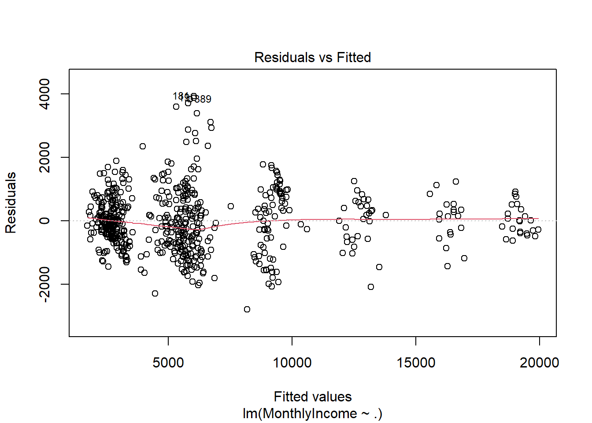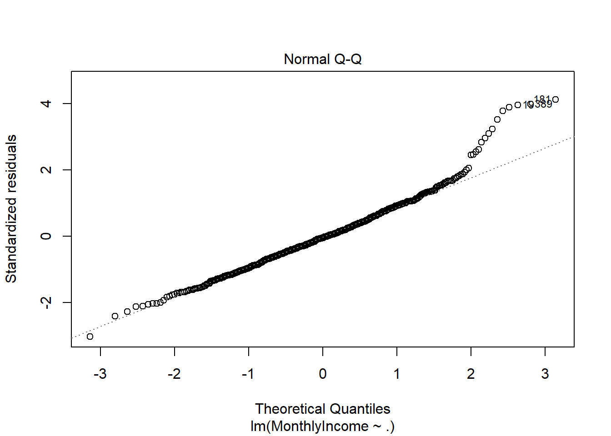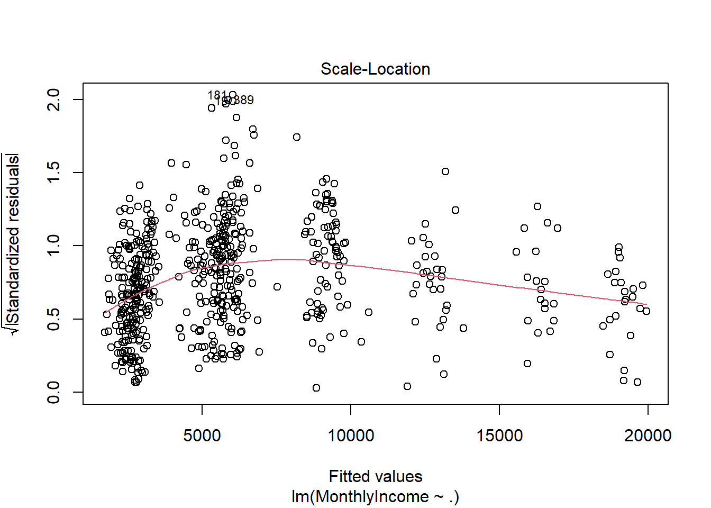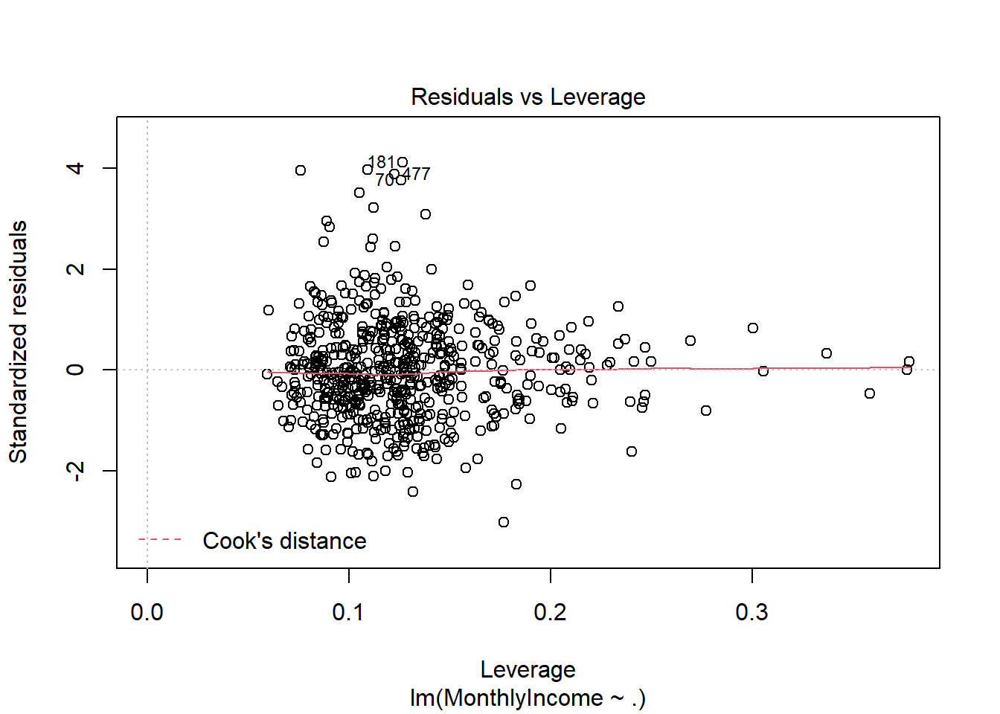
Residuals look OK, but we know that MonthlyIncome is skewed. Let’s re-run with log transform to see if our residuals look better. However, we are building this purely as a predictive model, so meeting our assumptions is not really important versus if we were developing a purely explanatory model.
linear2 <- lm(log(MonthlyIncome) ~., data = trainSet)
summary(linear2)##
## Call:
## lm(formula = log(MonthlyIncome) ~ ., data = trainSet)
##
## Residuals:
## Min 1Q Median 3Q Max
## -0.77957 -0.12130 -0.00414 0.11421 0.61517
##
## Coefficients:
## Estimate Std. Error t value Pr(>|t|)
## (Intercept) 8.701e+00 1.823e-01 47.724 < 2e-16 ***
## Age -1.202e-03 1.398e-03 -0.860 0.390447
## AttritionYes -3.408e-02 2.980e-02 -1.144 0.253300
## BusinessTravelTravel_Frequently 6.938e-02 3.513e-02 1.975 0.048777 *
## BusinessTravelTravel_Rarely 8.629e-02 2.968e-02 2.907 0.003804 **
## DailyRate 2.648e-05 2.308e-05 1.147 0.251719
## DepartmentResearch & Development 2.729e-02 1.330e-01 0.205 0.837491
## DepartmentSales -8.162e-03 1.379e-01 -0.059 0.952838
## DistanceFromHome 9.618e-04 1.150e-03 0.836 0.403440
## Education.L -4.705e-02 4.400e-02 -1.070 0.285339
## Education.Q -5.415e-02 3.708e-02 -1.460 0.144820
## Education.C -5.342e-02 2.710e-02 -1.971 0.049258 *
## Education^4 -3.148e-02 1.889e-02 -1.667 0.096112 .
## EducationFieldLife Sciences -6.708e-02 1.105e-01 -0.607 0.544156
## EducationFieldMarketing -6.271e-02 1.156e-01 -0.542 0.587883
## EducationFieldMedical -8.299e-02 1.106e-01 -0.750 0.453465
## EducationFieldOther -1.259e-01 1.165e-01 -1.081 0.280236
## EducationFieldTechnical Degree -1.267e-01 1.141e-01 -1.110 0.267478
## EnvironmentSatisfaction.L -2.549e-02 1.883e-02 -1.354 0.176383
## EnvironmentSatisfaction.Q 2.271e-02 1.887e-02 1.204 0.229206
## EnvironmentSatisfaction.C -1.567e-02 1.909e-02 -0.821 0.412019
## GenderMale 3.266e-02 1.873e-02 1.743 0.081867 .
## HourlyRate -4.306e-05 4.636e-04 -0.093 0.926029
## JobInvolvement2 -2.123e-02 4.402e-02 -0.482 0.629763
## JobInvolvement3 -2.994e-02 4.241e-02 -0.706 0.480576
## JobInvolvement4 1.010e-02 5.024e-02 0.201 0.840817
## JobLevel.L 1.045e+00 7.307e-02 14.305 < 2e-16 ***
## JobLevel.Q -2.590e-01 3.939e-02 -6.576 1.18e-10 ***
## JobLevel.C -9.423e-03 3.458e-02 -0.273 0.785343
## JobLevel^4 3.011e-02 2.925e-02 1.029 0.303897
## JobRoleHuman Resources -2.164e-01 1.417e-01 -1.527 0.127270
## JobRoleLaboratory Technician -1.969e-01 4.659e-02 -4.226 2.81e-05 ***
## JobRoleManager 3.129e-01 8.185e-02 3.823 0.000148 ***
## JobRoleManufacturing Director 1.770e-02 4.185e-02 0.423 0.672539
## JobRoleResearch Director 3.131e-01 5.843e-02 5.359 1.26e-07 ***
## JobRoleResearch Scientist -2.029e-01 4.644e-02 -4.369 1.51e-05 ***
## JobRoleSales Executive 1.533e-02 1.023e-01 0.150 0.880968
## JobRoleSales Representative -2.208e-01 1.135e-01 -1.945 0.052330 .
## JobSatisfaction.L 1.493e-02 1.909e-02 0.782 0.434327
## JobSatisfaction.Q 1.017e-02 1.914e-02 0.532 0.595257
## JobSatisfaction.C 8.634e-03 1.922e-02 0.449 0.653428
## MaritalStatusMarried 1.214e-02 2.525e-02 0.481 0.630793
## MaritalStatusSingle -9.110e-03 3.933e-02 -0.232 0.816935
## MonthlyRate -2.743e-07 1.314e-06 -0.209 0.834737
## NumCompaniesWorked1 -4.203e-02 3.000e-02 -1.401 0.161806
## NumCompaniesWorked2 1.820e-02 4.404e-02 0.413 0.679614
## NumCompaniesWorked3 6.210e-02 4.180e-02 1.485 0.138032
## NumCompaniesWorked4 1.321e-02 4.070e-02 0.325 0.745677
## NumCompaniesWorked5 7.342e-02 4.887e-02 1.502 0.133633
## NumCompaniesWorked6 2.014e-02 5.235e-02 0.385 0.700574
## NumCompaniesWorked7 1.443e-02 4.920e-02 0.293 0.769406
## NumCompaniesWorked8 6.367e-02 6.073e-02 1.048 0.294960
## NumCompaniesWorked9 4.128e-02 5.629e-02 0.733 0.463744
## OverTimeYes 3.346e-02 2.127e-02 1.574 0.116188
## PercentSalaryHike 6.819e-03 3.894e-03 1.751 0.080502 .
## PerformanceRating.L -6.745e-02 2.890e-02 -2.333 0.020006 *
## RelationshipSatisfaction.L -1.851e-02 1.874e-02 -0.987 0.323879
## RelationshipSatisfaction.Q -6.021e-03 1.940e-02 -0.310 0.756402
## RelationshipSatisfaction.C 3.987e-03 1.915e-02 0.208 0.835132
## StockOptionLevel1 -6.924e-04 3.066e-02 -0.023 0.981994
## StockOptionLevel2 -7.486e-02 4.140e-02 -1.808 0.071166 .
## StockOptionLevel3 -3.354e-02 4.693e-02 -0.715 0.475126
## TotalWorkingYears 7.163e-03 3.268e-03 2.192 0.028860 *
## TrainingTimesLastYear1 -1.891e-02 7.065e-02 -0.268 0.789120
## TrainingTimesLastYear2 -6.141e-02 5.973e-02 -1.028 0.304313
## TrainingTimesLastYear3 -3.172e-02 5.971e-02 -0.531 0.595473
## TrainingTimesLastYear4 -4.443e-02 6.706e-02 -0.663 0.507860
## TrainingTimesLastYear5 -5.590e-02 6.557e-02 -0.853 0.394299
## TrainingTimesLastYear6 -6.593e-03 7.162e-02 -0.092 0.926692
## WorkLifeBalance.L 1.622e-02 3.186e-02 0.509 0.610816
## WorkLifeBalance.Q -4.484e-02 2.604e-02 -1.722 0.085751 .
## WorkLifeBalance.C 1.418e-02 1.859e-02 0.763 0.445729
## YearsAtCompany -1.621e-03 4.464e-03 -0.363 0.716692
## YearsInCurrentRole 8.528e-03 4.888e-03 1.745 0.081603 .
## YearsSinceLastPromotion -7.911e-04 4.125e-03 -0.192 0.847994
## YearsWithCurrManager 2.688e-03 4.560e-03 0.590 0.555754
## ---
## Signif. codes: 0 '***' 0.001 '**' 0.01 '*' 0.05 '.' 0.1 ' ' 1
##
## Residual standard error: 0.2121 on 516 degrees of freedom
## Multiple R-squared: 0.9045, Adjusted R-squared: 0.8906
## F-statistic: 65.14 on 75 and 516 DF, p-value: < 2.2e-16Our R-squared decreases a bit, and we have to recalculate our RMSE since it’s on the log scale, but let’s check residuals.
plot(linear2)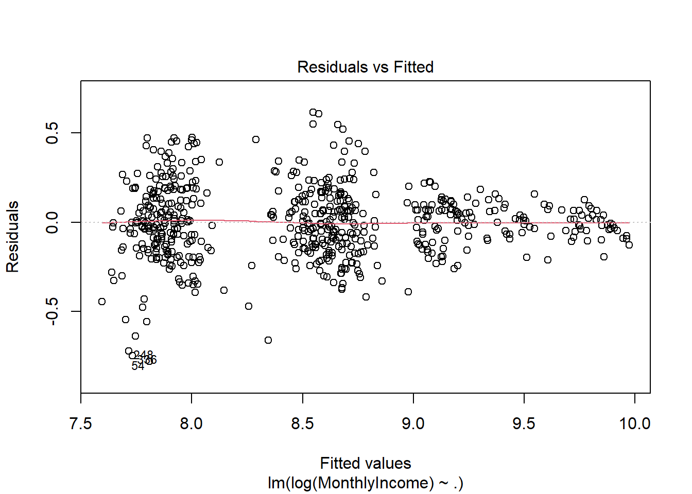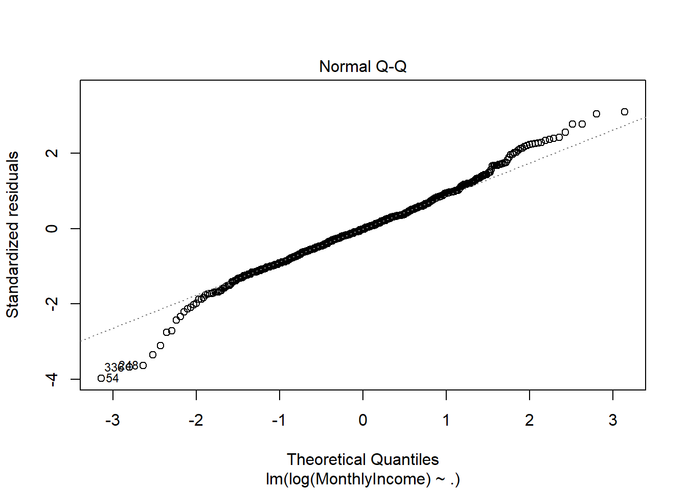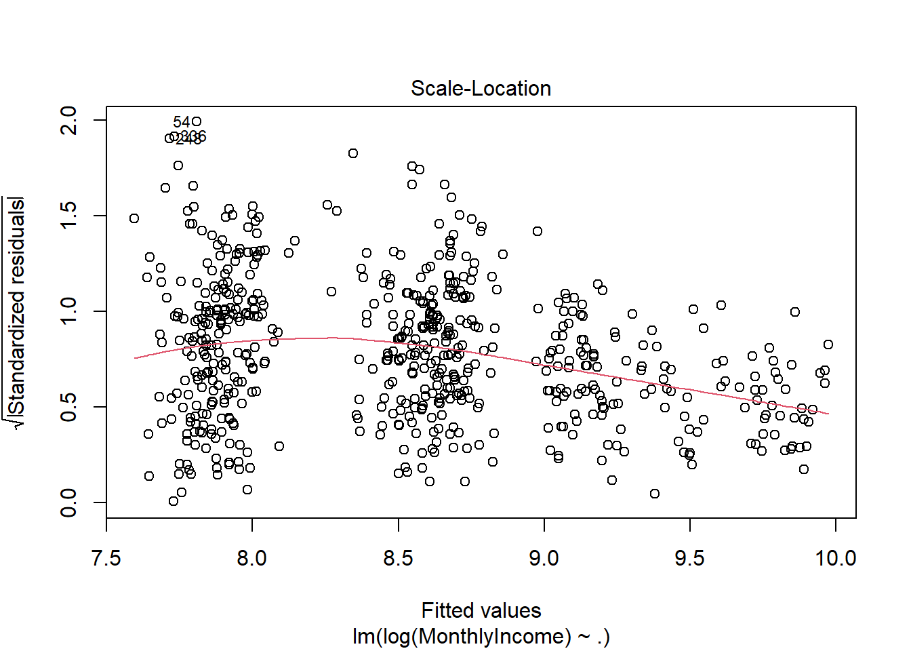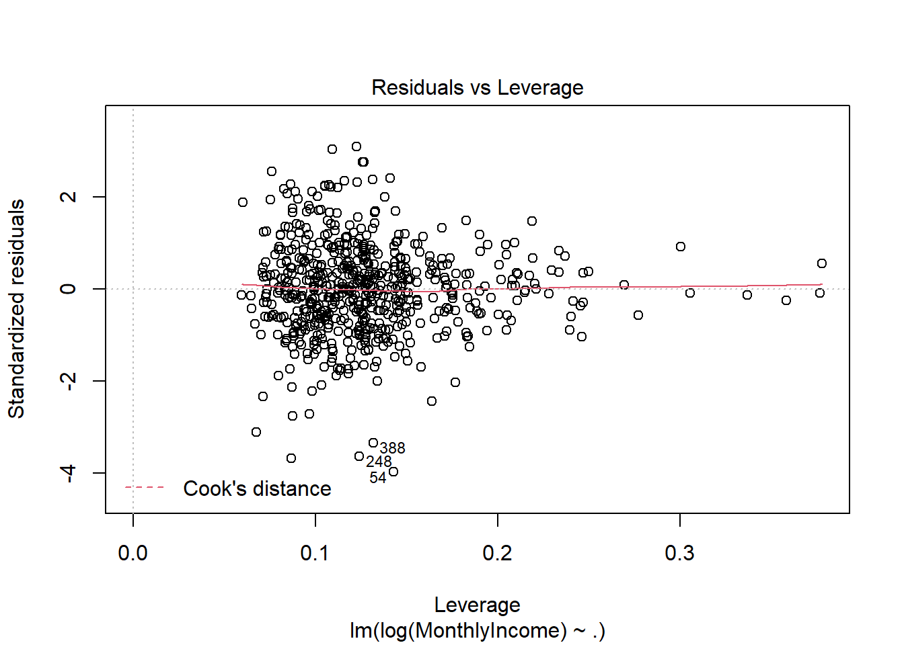
Residuals look a little better. Since our goal is prediction, let’s proceed with this model including all variables as it yields good performance.
#predict on test set and check performance
predict_lm <- predict(linear2, newdata = testSet)
postResample(exp(predict_lm), testSet$MonthlyIncome)## RMSE Rsquared MAE
## 1123.8220411 0.9294559 840.1440548We have good performance on our test set as well, with RMSE < $3000 at $1123 and our Rsquared at 0.929.
final_linear <- linear2#load in data
attrition <- read_csv(here::here("data", "CaseStudy2CompSet No Attrition.csv"))## Parsed with column specification:
## cols(
## .default = col_double(),
## BusinessTravel = col_character(),
## Department = col_character(),
## EducationField = col_character(),
## Gender = col_character(),
## JobRole = col_character(),
## MaritalStatus = col_character(),
## Over18 = col_character(),
## OverTime = col_character()
## )## See spec(...) for full column specifications.#pre-process to match training set
# Check for missing values
tibble(variable = names(colSums(is.na(attrition))),
missing = colSums(is.na(attrition))) %>%
gt() %>%
tab_header(title = "Missing Values in Data") | Missing Values in Data | |
|---|---|
| variable | missing |
| ID | 0 |
| Age | 0 |
| BusinessTravel | 0 |
| DailyRate | 0 |
| Department | 0 |
| DistanceFromHome | 0 |
| Education | 0 |
| EducationField | 0 |
| EmployeeCount | 0 |
| EmployeeNumber | 0 |
| EnvironmentSatisfaction | 0 |
| Gender | 0 |
| HourlyRate | 0 |
| JobInvolvement | 0 |
| JobLevel | 0 |
| JobRole | 0 |
| JobSatisfaction | 0 |
| MaritalStatus | 0 |
| MonthlyIncome | 0 |
| MonthlyRate | 0 |
| NumCompaniesWorked | 0 |
| Over18 | 0 |
| OverTime | 0 |
| PercentSalaryHike | 0 |
| PerformanceRating | 0 |
| RelationshipSatisfaction | 0 |
| StandardHours | 0 |
| StockOptionLevel | 0 |
| TotalWorkingYears | 0 |
| TrainingTimesLastYear | 0 |
| WorkLifeBalance | 0 |
| YearsAtCompany | 0 |
| YearsInCurrentRole | 0 |
| YearsSinceLastPromotion | 0 |
| YearsWithCurrManager | 0 |
#have to keep ID in for our prediction comparison, will exclude when running model#update all characters to factors
attrition[sapply(attrition, is.character)] <- lapply(attrition[sapply(attrition, is.character)],
as.factor)
#str(attrition)#update other groups to factors
attrition[cols] <- lapply(attrition[cols], factor)
#str(attrition)attrition$Education <- factor(attrition$Education, ordered = TRUE)
attrition$EnvironmentSatisfaction <- factor(attrition$EnvironmentSatisfaction, ordered = TRUE)
attrition$JobLevel <- factor(attrition$JobLevel, ordered = TRUE)
attrition$JobSatisfaction <- factor(attrition$JobSatisfaction, ordered = TRUE)
attrition$PerformanceRating <- factor(attrition$PerformanceRating, ordered = TRUE)
attrition$RelationshipSatisfaction <- factor(attrition$RelationshipSatisfaction, ordered = TRUE)
attrition$WorkLifeBalance <- factor(attrition$WorkLifeBalance, ordered = TRUE)
#str(attrition)#remove unnecessary values, employee count, over18, and standard hours
attrition <- attrition %>% dplyr::select(-c(EmployeeCount, Over18, StandardHours, EmployeeNumber))#predict on test set and check performance
predict_attrition <- predict(final_class, newdata = attrition[,2:31])
#join back to original dataset
attrition <- attrition %>% mutate(Attrition = predict_attrition)
#remove all columns except ID
attrition <- attrition %>% select(c("ID","Attrition"))
#save file
Case2PredictionsBall_Attrition <- write.csv(attrition, "Case2PredictionsBall_Attrition.csv", row.names = FALSE)#load in data
salary <- read_csv(here::here("data", "CaseStudy2CompSet No Salary.csv"))## Parsed with column specification:
## cols(
## .default = col_double(),
## Attrition = col_character(),
## BusinessTravel = col_character(),
## Department = col_character(),
## EducationField = col_character(),
## Gender = col_character(),
## JobRole = col_character(),
## MaritalStatus = col_character(),
## Over18 = col_character(),
## OverTime = col_character()
## )## See spec(...) for full column specifications.#pre-process to match training set
# Check for missing values
tibble(variable = names(colSums(is.na(salary))),
missing = colSums(is.na(salary))) %>%
gt() %>%
tab_header(title = "Missing Values in Data") | Missing Values in Data | |
|---|---|
| variable | missing |
| ID | 0 |
| Age | 0 |
| Attrition | 0 |
| BusinessTravel | 0 |
| DailyRate | 0 |
| Department | 0 |
| DistanceFromHome | 0 |
| Education | 0 |
| EducationField | 0 |
| EmployeeCount | 0 |
| EmployeeNumber | 0 |
| EnvironmentSatisfaction | 0 |
| Gender | 0 |
| HourlyRate | 0 |
| JobInvolvement | 0 |
| JobLevel | 0 |
| JobRole | 0 |
| JobSatisfaction | 0 |
| MaritalStatus | 0 |
| MonthlyRate | 0 |
| NumCompaniesWorked | 0 |
| Over18 | 0 |
| OverTime | 0 |
| PercentSalaryHike | 0 |
| PerformanceRating | 0 |
| RelationshipSatisfaction | 0 |
| StandardHours | 0 |
| StockOptionLevel | 0 |
| TotalWorkingYears | 0 |
| TrainingTimesLastYear | 0 |
| WorkLifeBalance | 0 |
| YearsAtCompany | 0 |
| YearsInCurrentRole | 0 |
| YearsSinceLastPromotion | 0 |
| YearsWithCurrManager | 0 |
#have to keep ID in for our prediction comparison, will exclude when running modelsalary[sapply(salary, is.character)] <- lapply(salary[sapply(salary, is.character)],
as.factor)
#update other groups to factors
salary[cols] <- lapply(salary[cols], factor)
salary$Education <- factor(salary$Education, ordered = TRUE)
salary$EnvironmentSatisfaction <- factor(salary$EnvironmentSatisfaction, ordered = TRUE)
salary$JobLevel <- factor(salary$JobLevel, ordered = TRUE)
salary$JobSatisfaction <- factor(salary$JobSatisfaction, ordered = TRUE)
salary$PerformanceRating <- factor(salary$PerformanceRating, ordered = TRUE)
salary$RelationshipSatisfaction <- factor(salary$RelationshipSatisfaction, ordered = TRUE)
salary$WorkLifeBalance <- factor(salary$WorkLifeBalance, ordered = TRUE)
#str(salary)
#remove unnecessary values, employee count, over18, and standard hours
salary <- salary %>% dplyr::select(-c(EmployeeCount, Over18, StandardHours, EmployeeNumber))#predict on test set and check performance
predict_salary <- predict(final_linear, newdata = salary[,2:31])
#join back to original dataset
salary <- salary %>% mutate(MonthlyIncome = exp(predict_salary))
#remove all columns except ID
salary <- salary %>% select(c("ID","MonthlyIncome"))
#save file
Case2PredictionsBall_Salary <- write.csv(salary, "Case2PredictionsBall_Salary.csv", row.names = FALSE)